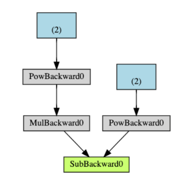
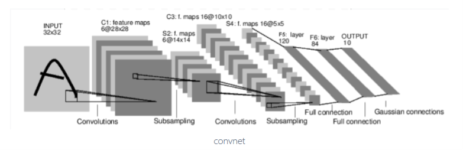
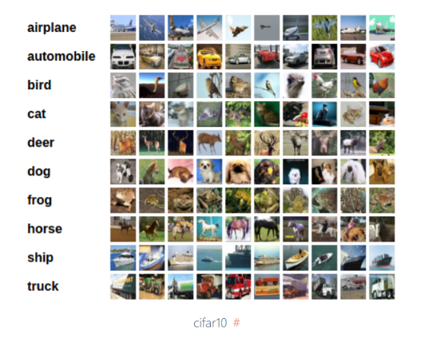
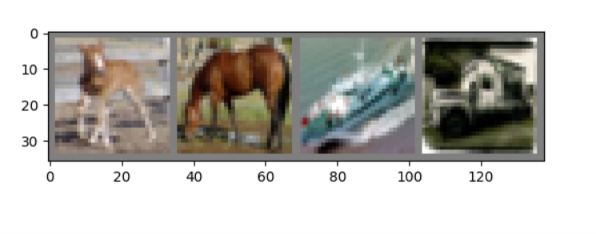
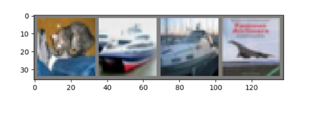

<!DOCTYPE html>


<html lang="zh-CN">


<head>
  <meta name="baidu-site-verification" content="codeva-NSg7ynviLa" />
  <meta charset="utf-8" />
    
  <meta name="viewport" content="width=device-width, initial-scale=1, maximum-scale=1" />
  <title>
    PyTorch官方文档-60分钟入门 |  
  </title>
  <meta name="generator" content="hexo-theme-ayer">
  
  <link rel="shortcut icon" href="/images/mojie.jpg" />
  
  
<link rel="stylesheet" href="/dist/main.css">

  <link rel="stylesheet" href="https://cdn.jsdelivr.net/gh/Shen-Yu/cdn/css/remixicon.min.css">
  
<link rel="stylesheet" href="/css/custom.css">

  
  <script src="https://cdn.jsdelivr.net/npm/pace-js@1.0.2/pace.min.js"></script>
  
  

  

<link rel="alternate" href="/atom.xml" title="null" type="application/atom+xml">
</head>

</html>

<body>
  <div id="app">
    
      
    <main class="content on">
      <section class="outer">
  <article
  id="post-PyTorch官方文档-60分钟入门"
  class="article article-type-post"
  itemscope
  itemprop="blogPost"
  data-scroll-reveal
>
  <div class="article-inner">
    
    <header class="article-header">
       
<h1 class="article-title sea-center" style="border-left:0" itemprop="name">
  PyTorch官方文档-60分钟入门
</h1>
 

    </header>
     
    <div class="article-meta">
      <a href="/posts/b8b0480a/" class="article-date">
  <time datetime="2026-11-10T06:49:52.000Z" itemprop="datePublished">2026-11-10</time>
</a>   
<div class="word_count">
    <span class="post-time">
        <span class="post-meta-item-icon">
            <i class="ri-quill-pen-line"></i>
            <span class="post-meta-item-text"> 字数统计:</span>
            <span class="post-count">8.9k</span>
        </span>
    </span>

    <span class="post-time">
        &nbsp; | &nbsp;
        <span class="post-meta-item-icon">
            <i class="ri-book-open-line"></i>
            <span class="post-meta-item-text"> 阅读时长≈</span>
            <span class="post-count">38 分钟</span>
        </span>
    </span>
</div>
 
    </div>
      
    <div class="tocbot"></div>


  
    <div class="article-entry" itemprop="articleBody">
       
  <p>这是官方入门文档，由于这些框架更新很快，建议先看官方文档，上面应该最新的代码写法。</p>
<p>同时建议看B站的一个 PyTorch 视频教程（网页二），短小精悍，用于实操不太行，但是有利于深入理解 PyTorch 代码原理。</p>
<span id="more"></span>
<h1 id="张量">张量</h1>
<p>PyTorch 输入输出，参数等等均是 Tensor 数据结构，类似与 Numpy ，除了 Tensors 可以在 GPU 上进行加速这一点不同外。</p>
<p>首先加载包</p>
<figure class="highlight python"><table><tr><td class="gutter"><pre><span class="line">1</span><br><span class="line">2</span><br></pre></td><td class="code"><pre><span class="line"><span class="keyword">import</span> torch</span><br><span class="line"><span class="keyword">import</span> numpy <span class="keyword">as</span> np</span><br></pre></td></tr></table></figure>
<h2 id="初始化张量">初始化张量</h2>
<p>有多种方式构建一个张量</p>
<ul>
<li><p>从数据直接构建张量，并且可以自动推断数据类型</p>
<figure class="highlight python"><table><tr><td class="gutter"><pre><span class="line">1</span><br><span class="line">2</span><br><span class="line">3</span><br></pre></td><td class="code"><pre><span class="line">data = [[<span class="number">1</span>,<span class="number">2</span>], [<span class="number">3</span>,<span class="number">4</span>]]</span><br><span class="line">x_data = torch.tensor(data)</span><br><span class="line">x_data</span><br></pre></td></tr></table></figure></li>
<li><p>从 NumPy 数组构建张量</p>
<figure class="highlight python"><table><tr><td class="gutter"><pre><span class="line">1</span><br><span class="line">2</span><br><span class="line">3</span><br></pre></td><td class="code"><pre><span class="line">np_array = np.array(data)</span><br><span class="line">x_np = torch.from_numpy(np_array)</span><br><span class="line">x_np</span><br></pre></td></tr></table></figure></li>
<li><p>从另一个张量中构建新张量</p>
<p>新的张量保留参数张量的属性（形状、数据类型），除非明确被覆盖。</p>
<figure class="highlight plaintext"><table><tr><td class="gutter"><pre><span class="line">1</span><br><span class="line">2</span><br><span class="line">3</span><br><span class="line">4</span><br><span class="line">5</span><br></pre></td><td class="code"><pre><span class="line">x_ones = torch.ones_like(x_data) # retains the properties of x_data</span><br><span class="line">print(f&quot;Ones Tensor: \n &#123;x_ones&#125; \n&quot;)</span><br><span class="line"></span><br><span class="line">x_rand = torch.rand_like(x_data, dtype=torch.float) # overrides the datatype of x_data</span><br><span class="line">print(f&quot;Random Tensor: \n &#123;x_rand&#125; \n&quot;)</span><br></pre></td></tr></table></figure></li>
<li><p>构建随机张量或固定值的张量</p>
<p>这里 <code>shape</code> 是一个张量维度组成的元组。</p>
<figure class="highlight plaintext"><table><tr><td class="gutter"><pre><span class="line">1</span><br><span class="line">2</span><br><span class="line">3</span><br><span class="line">4</span><br><span class="line">5</span><br><span class="line">6</span><br><span class="line">7</span><br><span class="line">8</span><br></pre></td><td class="code"><pre><span class="line">shape = (2,3,)</span><br><span class="line">rand_tensor = torch.rand(shape)</span><br><span class="line">ones_tensor = torch.ones(shape)</span><br><span class="line">zeros_tensor = torch.zeros(shape)</span><br><span class="line"></span><br><span class="line">print(f&quot;Random Tensor: \n &#123;rand_tensor&#125; \n&quot;)</span><br><span class="line">print(f&quot;Ones Tensor: \n &#123;ones_tensor&#125; \n&quot;)</span><br><span class="line">print(f&quot;Zeros Tensor: \n &#123;zeros_tensor&#125;&quot;)</span><br></pre></td></tr></table></figure></li>
</ul>
<h2 id="张量属性">张量属性</h2>
<p>属性包括 <code>shape</code> ，数据类型，存储在什么设备上。</p>
<figure class="highlight plaintext"><table><tr><td class="gutter"><pre><span class="line">1</span><br><span class="line">2</span><br><span class="line">3</span><br><span class="line">4</span><br><span class="line">5</span><br></pre></td><td class="code"><pre><span class="line">tensor = torch.rand(3, 4)</span><br><span class="line"></span><br><span class="line">print(f&quot;Shape of tensor: &#123;tensor.shape&#125;&quot;)</span><br><span class="line">print(f&quot;Datatype of tensor: &#123;tensor.dtype&#125;&quot;)</span><br><span class="line">print(f&quot;Device tensor is stored on: &#123;tensor.device&#125;&quot;)</span><br></pre></td></tr></table></figure>
<h2 id="张量操作">张量操作</h2>
<p>张量有超过100个操作方法，包括算数、线性代数、矩阵操作（转置、索引、切片）、采样等</p>
<p>每个操作都可以在GPU上运行（通常比在CPU上速度更快)。如果你在使用Colab，可以通过修改 Edit &gt; Notebook
Settings 来分配一个 GPU。</p>
<figure class="highlight plaintext"><table><tr><td class="gutter"><pre><span class="line">1</span><br><span class="line">2</span><br><span class="line">3</span><br><span class="line">4</span><br></pre></td><td class="code"><pre><span class="line"># We move our tensor to the GPU if available</span><br><span class="line">device = torch.accelerator.current_accelerator().type if torch.accelerator.is_available() else &#x27;cpu&#x27;</span><br><span class="line">tensor = tensor.to(device)</span><br><span class="line">print(f&quot;Device tensor is stored on: &#123;tensor.device&#125;&quot;)</span><br></pre></td></tr></table></figure>
<p>尝试下列操作，如果你已经对NumPy API十分熟悉，上手张量API将会很简单。</p>
<p><strong>类似numpy的索引和切片操作</strong></p>
<figure class="highlight plaintext"><table><tr><td class="gutter"><pre><span class="line">1</span><br><span class="line">2</span><br><span class="line">3</span><br><span class="line">4</span><br><span class="line">5</span><br><span class="line">6</span><br></pre></td><td class="code"><pre><span class="line">tensor = torch.ones(4, 4)</span><br><span class="line">print(f&quot;First row: &#123;tensor[0]&#125;&quot;)</span><br><span class="line">print(f&quot;First column: &#123;tensor[:, 0]&#125;&quot;)</span><br><span class="line">print(f&quot;Last column: &#123;tensor[..., -1]&#125;&quot;)</span><br><span class="line">tensor[:, 1] = 0</span><br><span class="line">print(tensor)</span><br></pre></td></tr></table></figure>
<p><strong>连接张量</strong> 你可以使用 torch.cat 沿着给定的维度连接一系列张量。另一个张量连接操作符， 与 torch.cat 稍有不同，请参阅 <a target="_blank" rel="noopener" href="https://pytorch.org/docs/stable/generated/torch.stack.html">torch.stack</a>。</p>
<figure class="highlight plaintext"><table><tr><td class="gutter"><pre><span class="line">1</span><br><span class="line">2</span><br></pre></td><td class="code"><pre><span class="line">t1 = torch.cat([tensor, tensor, tensor], dim=1)</span><br><span class="line">print(t1)</span><br></pre></td></tr></table></figure>
<p><strong>运算操作</strong></p>
<figure class="highlight plaintext"><table><tr><td class="gutter"><pre><span class="line">1</span><br><span class="line">2</span><br><span class="line">3</span><br><span class="line">4</span><br><span class="line">5</span><br><span class="line">6</span><br><span class="line">7</span><br><span class="line">8</span><br><span class="line">9</span><br><span class="line">10</span><br><span class="line">11</span><br><span class="line">12</span><br><span class="line">13</span><br><span class="line">14</span><br><span class="line">15</span><br></pre></td><td class="code"><pre><span class="line"># This computes the matrix multiplication between two tensors. y1, y2, y3 will have the same value</span><br><span class="line"># ``tensor.T`` returns the transpose of a tensor</span><br><span class="line">y1 = tensor @ tensor.T</span><br><span class="line">y2 = tensor.matmul(tensor.T)</span><br><span class="line"></span><br><span class="line">y3 = torch.rand_like(y1)</span><br><span class="line">torch.matmul(tensor, tensor.T, out=y3)</span><br><span class="line"></span><br><span class="line"></span><br><span class="line"># This computes the element-wise product. z1, z2, z3 will have the same value</span><br><span class="line">z1 = tensor * tensor</span><br><span class="line">z2 = tensor.mul(tensor)</span><br><span class="line"></span><br><span class="line">z3 = torch.rand_like(tensor)</span><br><span class="line">torch.mul(tensor, tensor, out=z3)</span><br></pre></td></tr></table></figure>
<p><strong>单个元素的张量</strong> 在聚合运算场景中，你可能会得到一个单元素的张量，可使用<code>item()</code>将其传唤为Python数值。</p>
<figure class="highlight plaintext"><table><tr><td class="gutter"><pre><span class="line">1</span><br><span class="line">2</span><br><span class="line">3</span><br></pre></td><td class="code"><pre><span class="line">agg = tensor.sum()</span><br><span class="line">agg_item = agg.item()</span><br><span class="line">print(agg_item, type(agg_item))</span><br></pre></td></tr></table></figure>
<p><strong>原地操作</strong> 修改张量中的原值操作称为原地操作。它们以 _ 后缀表示。例如：x.copy_(y)，x.t_()，会改变 x。</p>
<figure class="highlight plaintext"><table><tr><td class="gutter"><pre><span class="line">1</span><br><span class="line">2</span><br><span class="line">3</span><br></pre></td><td class="code"><pre><span class="line">print(f&quot;&#123;tensor&#125; \n&quot;)</span><br><span class="line">tensor.add_(5)</span><br><span class="line">print(tensor)</span><br></pre></td></tr></table></figure>
<h2 id="与numpy转换">与NumPy转换</h2>
<p>CPU 上的张量和 NumPy 数组可以共享它们的底层内存位置，改变其中一个就会改变另一个。</p>
<h3 id="张量转为numpy-array">张量转为NumPy array</h3>
<figure class="highlight plaintext"><table><tr><td class="gutter"><pre><span class="line">1</span><br><span class="line">2</span><br><span class="line">3</span><br><span class="line">4</span><br></pre></td><td class="code"><pre><span class="line">t = torch.ones(5)</span><br><span class="line">print(f&quot;t: &#123;t&#125;&quot;)</span><br><span class="line">n = t.numpy()</span><br><span class="line">print(f&quot;n: &#123;n&#125;&quot;)</span><br></pre></td></tr></table></figure>
<p>对于张量的修改体现到了NumPy array上。</p>
<figure class="highlight plaintext"><table><tr><td class="gutter"><pre><span class="line">1</span><br><span class="line">2</span><br><span class="line">3</span><br></pre></td><td class="code"><pre><span class="line">t.add_(1)</span><br><span class="line">print(f&quot;t: &#123;t&#125;&quot;)</span><br><span class="line">print(f&quot;n: &#123;n&#125;&quot;)</span><br></pre></td></tr></table></figure>
<h3 id="numpy-array转为张量">NumPy array转为张量</h3>
<figure class="highlight plaintext"><table><tr><td class="gutter"><pre><span class="line">1</span><br><span class="line">2</span><br></pre></td><td class="code"><pre><span class="line">n = np.ones(5)</span><br><span class="line">t = torch.from_numpy(n)</span><br></pre></td></tr></table></figure>
<p>NumPy array转为张量（对于 NumPy array 的修改也体现到了对张量的修改）</p>
<figure class="highlight plaintext"><table><tr><td class="gutter"><pre><span class="line">1</span><br><span class="line">2</span><br><span class="line">3</span><br></pre></td><td class="code"><pre><span class="line">np.add(n, 1, out=n)</span><br><span class="line">print(f&quot;t: &#123;t&#125;&quot;)</span><br><span class="line">print(f&quot;n: &#123;n&#125;&quot;)</span><br></pre></td></tr></table></figure>
<h1 id="torch.autograd-的简明介绍">torch.autograd 的简明介绍</h1>
<p>torch.autograd 是 PyTorch 的自动微分引擎，用于神经网络的训练。在本节中，您将了解 autograd 如何帮助神经网络进行训练。</p>
<h2 id="背景">背景</h2>
<p>神经网络（NNs）是一组嵌套函数，对某些输入数据进行处理。这些函数由参数（包括权重和偏置）定义，在PyTorch中以张量的形式存储。</p>
<p>训练神经网络分为两个步骤：</p>
<ul>
<li>前向传播：在前向传播中，神经网络会根据输入数据对正确输出做出最佳猜测。它通过依次运行各个函数来实现这一猜测。</li>
<li>反向传播：在反向传播中，神经网络会根据其预测误差调整参数。具体做法是从输出层向后逐层反向计算，收集误差对各函数参数的导数（梯度），然后通过梯度下降法优化这些参数。</li>
</ul>
<h2 id="在-pytorch-中的使用">在 PyTorch 中的使用</h2>
<p>我们来看一个训练步骤。在这个例子中，我们从 torchvision 加载一个预训练的 resnet18 模型。我们创建一个随机数据张量，表示一张包含 3 个通道、高和宽均为 64 的图像，并将对应的标签初始化为一些随机值。预训练模型中的标签形状为 (1,1000)。</p>
<blockquote>
<p>注意：本教程仅适用于CPU，不适用于GPU设备（即使张量被移动到CUDA）。</p>
</blockquote>
<figure class="highlight python"><table><tr><td class="gutter"><pre><span class="line">1</span><br><span class="line">2</span><br><span class="line">3</span><br><span class="line">4</span><br><span class="line">5</span><br></pre></td><td class="code"><pre><span class="line"><span class="keyword">import</span> torch</span><br><span class="line"><span class="keyword">from</span> torchvision.models <span class="keyword">import</span> resnet18, ResNet18_Weights</span><br><span class="line">model = resnet18(weights=ResNet18_Weights.DEFAULT)</span><br><span class="line">data = torch.rand(<span class="number">1</span>, <span class="number">3</span>, <span class="number">64</span>, <span class="number">64</span>)</span><br><span class="line">labels = torch.rand(<span class="number">1</span>, <span class="number">1000</span>)</span><br></pre></td></tr></table></figure>
<p>这里图像数据维度为 形状为 <code>(N, C, H, W)</code> ，这里 <code>N</code> 是批次大小。</p>
<p>接下来，我们将输入数据通过模型的每一层进行处理，以生成预测结果。这称为前向传播。</p>
<figure class="highlight plaintext"><table><tr><td class="gutter"><pre><span class="line">1</span><br></pre></td><td class="code"><pre><span class="line">prediction = model(data) # forward pass</span><br></pre></td></tr></table></figure>
<p>我们使用模型的预测结果和对应的标签来计算误差（<code>loss</code>）。下一步是将该误差通过网络进行反向传播。当我们在误差张量上调用 <code>.backward()</code> 时，反向传播即开始执行。随后，Autograd 会计算并存储每个模型参数的梯度，这些梯度被保存在参数的 <code>.grad</code> 属性中。</p>
<figure class="highlight plaintext"><table><tr><td class="gutter"><pre><span class="line">1</span><br><span class="line">2</span><br></pre></td><td class="code"><pre><span class="line">loss = (prediction - labels).sum()</span><br><span class="line">loss.backward() # backward pass</span><br></pre></td></tr></table></figure>
<p>接下来，我们加载一个优化器，在本例中使用学习率为0.01、动量为0.9的随机梯度下降（SGD）。我们将模型的所有参数注册到该优化器中。</p>
<figure class="highlight plaintext"><table><tr><td class="gutter"><pre><span class="line">1</span><br></pre></td><td class="code"><pre><span class="line">optim = torch.optim.SGD(model.parameters(), lr=1e-2, momentum=0.9)</span><br></pre></td></tr></table></figure>
<p>最后，我们调用 <code>.step()</code> 来启动梯度下降。优化器会根据 <code>.grad</code> 中存储的梯度来调整每个参数。</p>
<figure class="highlight plaintext"><table><tr><td class="gutter"><pre><span class="line">1</span><br></pre></td><td class="code"><pre><span class="line">optim.step() #gradient descent</span><br></pre></td></tr></table></figure>
<p>此时，你已经具备了训练神经网络所需的一切。以下部分详细介绍了自动求导（autograd）的工作原理，你可以选择跳过。</p>
<h2 id="自动求导中的微分">自动求导中的微分</h2>
<p>让我们来看看 autograd 如何收集梯度。我们创建了两个具有 requires_grad=True 的张量 a 和 b，这向 autograd 发出信号，告知它对这两个张量的每一项操作都应被跟踪。</p>
<figure class="highlight python"><table><tr><td class="gutter"><pre><span class="line">1</span><br><span class="line">2</span><br><span class="line">3</span><br><span class="line">4</span><br></pre></td><td class="code"><pre><span class="line"><span class="keyword">import</span> torch</span><br><span class="line"></span><br><span class="line">a = torch.tensor([<span class="number">2.</span>, <span class="number">3.</span>], requires_grad=<span class="literal">True</span>)</span><br><span class="line">b = torch.tensor([<span class="number">6.</span>, <span class="number">4.</span>], requires_grad=<span class="literal">True</span>)</span><br></pre></td></tr></table></figure>
<p>我们从 a 和 b 构造另一个张量 Q。
<span class="math display">\[
Q = 3 a^3 - b^2
\]</span></p>
<figure class="highlight plaintext"><table><tr><td class="gutter"><pre><span class="line">1</span><br></pre></td><td class="code"><pre><span class="line">Q = 3*a**3 - b**2</span><br></pre></td></tr></table></figure>
<p>假设 a 和 b 是神经网络的参数，Q 是误差。在神经网络训练中，我们希望得到误差相对于参数的梯度，即
<span class="math display">\[
\frac{\partial Q}{\partial a} = 9a^2 \\
\frac{\partial Q}{\partial b} = -2b
\]</span>
当我们对 Q 调用 <code>.backward()</code> 时，自动求导会计算这些梯度，并将它们存储在相应张量的 <code>.grad</code> 属性中。</p>
<p>因为 Q 是一个向量，因此我们需要在 <code>Q.backward()</code> 中显式传递 <code>gradient</code> 参数（因为一般计算梯度是针对标量损失的，针对向量传入的 <code>gradient</code> 参数相当于告诉 PyTorch：<strong>假设你有一个标量损失 <span class="math inline">\(L\)</span>，且 <span class="math inline">\(\frac{∂L}{∂\boldsymbol{y}}=\boldsymbol{v}\)</span></strong>，这里 <span class="math inline">\(\boldsymbol{v}\)</span> 就是提供的参数，请帮我计算 <span class="math inline">\(\frac{∂L}{∂\boldsymbol{x}}\)</span> ）。</p>
<p><code>gradient</code> 是一个与 Q 具有相同形状的张量，表示对 Q 进行求导的结果，如
<span class="math display">\[
\frac{dQ}{dQ} = 1
\]</span></p>
<p>因此，这里提供的 <code>gradient</code> 参数是一个全为1的与Q 具有相同形状的张量。</p>
<figure class="highlight python"><table><tr><td class="gutter"><pre><span class="line">1</span><br><span class="line">2</span><br></pre></td><td class="code"><pre><span class="line">external_grad = torch.tensor([<span class="number">1.</span>, <span class="number">1.</span>])</span><br><span class="line">Q.backward(gradient=external_grad)</span><br></pre></td></tr></table></figure>
<p>同样地，我们也可以将 Q 集成一个标量，并隐式调用反向传播，例如 <code>Q.sum().backward()</code>。</p>
<p>梯度现在被存储在 a.grad 和 b.grad 中</p>
<figure class="highlight plaintext"><table><tr><td class="gutter"><pre><span class="line">1</span><br><span class="line">2</span><br><span class="line">3</span><br></pre></td><td class="code"><pre><span class="line"># check if collected gradients are correct</span><br><span class="line">print(9*a**2 == a.grad)</span><br><span class="line">print(-2*b == b.grad)</span><br></pre></td></tr></table></figure>
<figure class="highlight plaintext"><table><tr><td class="gutter"><pre><span class="line">1</span><br><span class="line">2</span><br></pre></td><td class="code"><pre><span class="line">tensor([True, True])</span><br><span class="line">tensor([True, True])</span><br></pre></td></tr></table></figure>
<h3 id="选读部分使用-autograd-进行向量微分">选读部分：使用 autograd 进行向量微分</h3>
<p>数学上，若有向量函数 <span class="math inline">\(\boldsymbol{y} = \boldsymbol{f(x)}\)</span> ，那么 <span class="math inline">\(\boldsymbol{y}\)</span> 关于 <span class="math inline">\(\boldsymbol{x}\)</span> 的梯度就是一个雅可比矩阵：<br />
<span class="math display">\[
\boldsymbol{J}
= \left( \frac{\partial \boldsymbol{y}}{\partial x_1} \quad \dots \quad \frac{\partial \boldsymbol{y}}{\partial x_n} \right)
= 
\begin{pmatrix}
\frac{\partial y_1}{\partial x_1} &amp; \cdots &amp; \frac{\partial y_1}{\partial x_n} \\
\vdots &amp; \ddots &amp; \vdots \\
\frac{\partial y_m}{\partial x_1} &amp; \cdots &amp; \frac{\partial y_m}{\partial x_n}
\end{pmatrix}
\]</span>
而 <code>torch.autograd</code> 这个包就是用来计算一些<strong>向量与雅可比矩阵的乘积</strong>（<span class="math inline">\(\boldsymbol{v} \boldsymbol{J}\)</span> ）的。例如，如果 <span class="math inline">\(\boldsymbol{v}\)</span> 是一个标量函数 <span class="math inline">\(l = g(\boldsymbol{y})\)</span> 的梯度：<span class="math inline">\(\boldsymbol{v} = \begin{pmatrix}
\dfrac{\partial l}{\partial y_1} &amp; \cdots &amp; \dfrac{\partial l}{\partial y_m}
\end{pmatrix}\)</span> 由链式法则，我们可以得到：
<span class="math display">\[
\boldsymbol{v} \boldsymbol{J} = 
\begin{pmatrix}
\dfrac{\partial l}{\partial y_1} &amp; \cdots &amp; \dfrac{\partial l}{\partial y_m}
\end{pmatrix}
\begin{pmatrix}
\dfrac{\partial y_1}{\partial x_1} &amp; \cdots &amp; \dfrac{\partial y_1}{\partial x_n} \\
\vdots &amp; \ddots &amp; \vdots \\
\dfrac{\partial y_m}{\partial x_1} &amp; \cdots &amp; \dfrac{\partial y_m}{\partial x_n}
\end{pmatrix}
=
\begin{pmatrix}
\dfrac{\partial l}{\partial x_1} &amp; \cdots &amp; \dfrac{\partial l}{\partial x_n}
\end{pmatrix}
\]</span>
官网例子中 <span class="math inline">\(\boldsymbol{v}\)</span> 设置为竖向量，因此这里改成了 <span class="math inline">\(\boldsymbol{J}^{T} \boldsymbol{v}\)</span> ，不过是一个意思。</p>
<p>上面的 <code>gradient</code> 参数就是这里的 <span class="math inline">\(\boldsymbol{v}\)</span> 向量。</p>
<p>注意：grad在反向传播过程中是累加的(accumulated)，这意味着每一次运行反向传播，梯度都会累加之前的梯度，所以一般在反向传播之前需把梯度清零。</p>
<h3 id="计算图">计算图</h3>
<p>从概念上讲，自动求导通过由函数对象构成的有向无环图（DAG），记录数据（张量）以及所有执行的操作（包括生成的新张量）。在这个DAG中，叶子节点是输入张量，根节点是输出张量。通过从根节点追踪到叶子节点，可以利用链式法则自动计算梯度。</p>
<p>在前向传播过程中，自动求导会同时完成两件事：</p>
<ul>
<li>执行所请求的操作以计算结果张量，并</li>
<li>在DAG中保持操作的梯度函数。</li>
</ul>
<p>当在DAG根节点调用.backward()时，反向传播开始。然后autograd会：</p>
<ul>
<li>计算每个 <code>.grad_fn</code> 的梯度</li>
<li>将它们累积到相应张量的 .grad 属性中，并</li>
<li>使用链式法则，一路传播到叶节点张量。</li>
</ul>
<p>以下是本例中DAG的可视化表示。图中的箭头方向指向前向传播的方向。节点代表前向传播中每个操作的反向函数。蓝色的叶节点表示我们的叶张量a和b。</p>
<p></p>
<blockquote>
<p>在 PyTorch 中，DAG 是动态的。需要注意的是，图会从头开始重新构建；每次调用 .backward()
之后，自动求导（autograd）就会开始填充一个新的图。这正是允许你在模型中使用控制流语句的原因：你可以根据需要，在每一轮迭代中修改图的形状、大小和操作。</p>
</blockquote>
<h3 id="排除在dag之外的张量">排除在DAG之外的张量</h3>
<p>torch.autograd 会跟踪所有 requires_grad 标志设为 True 的张量上的操作。对于不需要梯度的张量，将该属性设置为 False 会将其排除在梯度计算 DAG 之外。</p>
<p>即使只有一个输入张量的 requires_grad=True，输出张量仍需要梯度。</p>
<figure class="highlight plaintext"><table><tr><td class="gutter"><pre><span class="line">1</span><br><span class="line">2</span><br><span class="line">3</span><br><span class="line">4</span><br><span class="line">5</span><br><span class="line">6</span><br><span class="line">7</span><br><span class="line">8</span><br></pre></td><td class="code"><pre><span class="line">x = torch.rand(5, 5)</span><br><span class="line">y = torch.rand(5, 5)</span><br><span class="line">z = torch.rand((5, 5), requires_grad=True)</span><br><span class="line"></span><br><span class="line">a = x + y</span><br><span class="line">print(f&quot;Does `a` require gradients?: &#123;a.requires_grad&#125;&quot;)</span><br><span class="line">b = x + z</span><br><span class="line">print(f&quot;Does `b` require gradients?: &#123;b.requires_grad&#125;&quot;)</span><br></pre></td></tr></table></figure>
<figure class="highlight plaintext"><table><tr><td class="gutter"><pre><span class="line">1</span><br><span class="line">2</span><br></pre></td><td class="code"><pre><span class="line">Does `a` require gradients?: False</span><br><span class="line">Does `b` require gradients?: True</span><br></pre></td></tr></table></figure>
<p>在神经网络中，那些不计算梯度的参数通常被称为冻结参数。如果你事先知道某些参数不需要梯度，那么将这些参数“冻结”是有用的（这能带来一些性能优势，通过减少自动求导计算来实现）。</p>
<p>在微调过程中，我们冻结模型的大部分参数，通常只修改分类器层以对新标签进行预测。下面我们通过一个小例子来演示这一过程。与之前一样，我们加载一个预训练好的ResNet18模型，并冻结所有参数。</p>
<figure class="highlight python"><table><tr><td class="gutter"><pre><span class="line">1</span><br><span class="line">2</span><br><span class="line">3</span><br><span class="line">4</span><br><span class="line">5</span><br><span class="line">6</span><br><span class="line">7</span><br></pre></td><td class="code"><pre><span class="line"><span class="keyword">from</span> torch <span class="keyword">import</span> nn, optim</span><br><span class="line"></span><br><span class="line">model = resnet18(weights=ResNet18_Weights.DEFAULT)</span><br><span class="line"></span><br><span class="line"><span class="comment"># Freeze all the parameters in the network</span></span><br><span class="line"><span class="keyword">for</span> param <span class="keyword">in</span> model.parameters():</span><br><span class="line">    param.requires_grad = <span class="literal">False</span></span><br></pre></td></tr></table></figure>
<p>假设我们想在包含10个标签的新数据集上对模型进行微调。在ResNet中，分类器是最后一个线性层 model.fc。我们可以直接用一个新的线性层（默认不冻结）来替换它，该层将作为我们的分类器。</p>
<figure class="highlight python"><table><tr><td class="gutter"><pre><span class="line">1</span><br></pre></td><td class="code"><pre><span class="line">model.fc = nn.Linear(<span class="number">512</span>, <span class="number">10</span>)</span><br></pre></td></tr></table></figure>
<p>现在模型中的所有参数（除了 model.fc 的参数）都被冻结了。唯一能计算梯度的参数是 model.fc 的权重和偏置。</p>
<figure class="highlight python"><table><tr><td class="gutter"><pre><span class="line">1</span><br><span class="line">2</span><br></pre></td><td class="code"><pre><span class="line"><span class="comment"># Optimize only the classifier</span></span><br><span class="line">optimizer = optim.SGD(model.parameters(), lr=<span class="number">1e-2</span>, momentum=<span class="number">0.9</span>)</span><br></pre></td></tr></table></figure>
<p>请注意，尽管我们在优化器中注册了所有参数，但只有分类器的权重和偏置会计算梯度（因此在梯度下降中被更新）。</p>
<h1 id="神经网络">神经网络</h1>
<p>可以使用 torch.nn 包来构建神经网络。</p>
<p>既然你已经了解了自动求导，神经网络（nn）就依赖自动求导来定义模型并对其进行求导。一个 nn.Module 包含多个层，以及一个名为 forward(input) 的方法，用于返回输出结果 output。</p>
<p>例如，看看这个用于分类数字图像的网络：</p>
<p></p>
<p>这是一个简单的前馈网络。它接收输入，依次通过多个层，最后输出结果。</p>
<p>神经网络的典型训练过程如下：</p>
<ul>
<li><p>定义具有一些可学习参数 (或权重) 的神经网络</p></li>
<li><p>迭代输入数据集</p></li>
<li><p>通过网络处理输入</p></li>
<li><p>计算损失 (输出与正确值的差距)</p></li>
<li><p>将梯度反向传播回网络的参数</p></li>
<li><p>更新网络的权重，通常使用一个简单的更新规则: <code>weight = weight - learning_rate * gradient</code></p></li>
</ul>
<h2 id="定义网络">定义网络</h2>
<p>定义网络如下</p>
<figure class="highlight python"><table><tr><td class="gutter"><pre><span class="line">1</span><br><span class="line">2</span><br><span class="line">3</span><br><span class="line">4</span><br><span class="line">5</span><br><span class="line">6</span><br><span class="line">7</span><br><span class="line">8</span><br><span class="line">9</span><br><span class="line">10</span><br><span class="line">11</span><br><span class="line">12</span><br><span class="line">13</span><br><span class="line">14</span><br><span class="line">15</span><br><span class="line">16</span><br><span class="line">17</span><br><span class="line">18</span><br><span class="line">19</span><br><span class="line">20</span><br><span class="line">21</span><br><span class="line">22</span><br><span class="line">23</span><br><span class="line">24</span><br><span class="line">25</span><br><span class="line">26</span><br><span class="line">27</span><br><span class="line">28</span><br><span class="line">29</span><br><span class="line">30</span><br><span class="line">31</span><br><span class="line">32</span><br><span class="line">33</span><br><span class="line">34</span><br><span class="line">35</span><br><span class="line">36</span><br><span class="line">37</span><br><span class="line">38</span><br><span class="line">39</span><br><span class="line">40</span><br><span class="line">41</span><br><span class="line">42</span><br><span class="line">43</span><br><span class="line">44</span><br><span class="line">45</span><br><span class="line">46</span><br><span class="line">47</span><br><span class="line">48</span><br><span class="line">49</span><br></pre></td><td class="code"><pre><span class="line"><span class="keyword">import</span> torch</span><br><span class="line"><span class="keyword">import</span> torch.nn <span class="keyword">as</span> nn</span><br><span class="line"><span class="keyword">import</span> torch.nn.functional <span class="keyword">as</span> F</span><br><span class="line"></span><br><span class="line"></span><br><span class="line"><span class="keyword">class</span> <span class="title class_">Net</span>(nn.Module):</span><br><span class="line"></span><br><span class="line">    <span class="keyword">def</span> <span class="title function_">__init__</span>(<span class="params">self</span>):</span><br><span class="line">        <span class="built_in">super</span>().__init__()</span><br><span class="line">        <span class="comment"># 1 input image channel, 6 output channels, 5x5 square convolution</span></span><br><span class="line">        <span class="comment"># kernel</span></span><br><span class="line">        self.conv1 = nn.Conv2d(<span class="number">1</span>, <span class="number">6</span>, <span class="number">5</span>)</span><br><span class="line">        self.conv2 = nn.Conv2d(<span class="number">6</span>, <span class="number">16</span>, <span class="number">5</span>)</span><br><span class="line">        <span class="comment"># an affine operation: y = Wx + b</span></span><br><span class="line">        self.fc1 = nn.Linear(<span class="number">16</span> * <span class="number">5</span> * <span class="number">5</span>, <span class="number">120</span>)  <span class="comment"># 5*5 from image dimension</span></span><br><span class="line">        self.fc2 = nn.Linear(<span class="number">120</span>, <span class="number">84</span>)</span><br><span class="line">        self.fc3 = nn.Linear(<span class="number">84</span>, <span class="number">10</span>)</span><br><span class="line"></span><br><span class="line">    <span class="keyword">def</span> <span class="title function_">forward</span>(<span class="params">self, <span class="built_in">input</span></span>):</span><br><span class="line">        <span class="comment"># Convolution layer C1: 1 input image channel, 6 output channels,</span></span><br><span class="line">        <span class="comment"># 5x5 square convolution, it uses RELU activation function, and</span></span><br><span class="line">        <span class="comment"># outputs a Tensor with size (N, 6, 28, 28), where N is the size of the batch</span></span><br><span class="line">        c1 = F.relu(self.conv1(<span class="built_in">input</span>))</span><br><span class="line">        <span class="comment"># Subsampling layer S2: 2x2 grid, purely functional,</span></span><br><span class="line">        <span class="comment"># this layer does not have any parameter, and outputs a (N, 6, 14, 14) Tensor</span></span><br><span class="line">        s2 = F.max_pool2d(c1, (<span class="number">2</span>, <span class="number">2</span>))</span><br><span class="line">        <span class="comment"># Convolution layer C3: 6 input channels, 16 output channels,</span></span><br><span class="line">        <span class="comment"># 5x5 square convolution, it uses RELU activation function, and</span></span><br><span class="line">        <span class="comment"># outputs a (N, 16, 10, 10) Tensor</span></span><br><span class="line">        c3 = F.relu(self.conv2(s2))</span><br><span class="line">        <span class="comment"># Subsampling layer S4: 2x2 grid, purely functional,</span></span><br><span class="line">        <span class="comment"># this layer does not have any parameter, and outputs a (N, 16, 5, 5) Tensor</span></span><br><span class="line">        s4 = F.max_pool2d(c3, <span class="number">2</span>)</span><br><span class="line">        <span class="comment"># Flatten operation: purely functional, outputs a (N, 400) Tensor</span></span><br><span class="line">        s4 = torch.flatten(s4, <span class="number">1</span>)</span><br><span class="line">        <span class="comment"># Fully connected layer F5: (N, 400) Tensor input,</span></span><br><span class="line">        <span class="comment"># and outputs a (N, 120) Tensor, it uses RELU activation function</span></span><br><span class="line">        f5 = F.relu(self.fc1(s4))</span><br><span class="line">        <span class="comment"># Fully connected layer F6: (N, 120) Tensor input,</span></span><br><span class="line">        <span class="comment"># and outputs a (N, 84) Tensor, it uses RELU activation function</span></span><br><span class="line">        f6 = F.relu(self.fc2(f5))</span><br><span class="line">        <span class="comment"># Fully connected layer OUTPUT: (N, 84) Tensor input, and</span></span><br><span class="line">        <span class="comment"># outputs a (N, 10) Tensor</span></span><br><span class="line">        output = self.fc3(f6)</span><br><span class="line">        <span class="keyword">return</span> output</span><br><span class="line"></span><br><span class="line"></span><br><span class="line">net = Net()</span><br><span class="line"><span class="built_in">print</span>(net)</span><br></pre></td></tr></table></figure>
<p>输出结果为</p>
<figure class="highlight plaintext"><table><tr><td class="gutter"><pre><span class="line">1</span><br><span class="line">2</span><br><span class="line">3</span><br><span class="line">4</span><br><span class="line">5</span><br><span class="line">6</span><br><span class="line">7</span><br></pre></td><td class="code"><pre><span class="line">Net(</span><br><span class="line">  (conv1): Conv2d(1, 6, kernel_size=(5, 5), stride=(1, 1))</span><br><span class="line">  (conv2): Conv2d(6, 16, kernel_size=(5, 5), stride=(1, 1))</span><br><span class="line">  (fc1): Linear(in_features=400, out_features=120, bias=True)</span><br><span class="line">  (fc2): Linear(in_features=120, out_features=84, bias=True)</span><br><span class="line">  (fc3): Linear(in_features=84, out_features=10, bias=True)</span><br><span class="line">)</span><br></pre></td></tr></table></figure>
<p>你只需定义前向函数，后向函数（用于计算梯度）将通过自动微分（autograd）自动生成。在前向函数中可以使用任意的张量操作。</p>
<p>模型的可学习参数通过 net.parameters() 返回</p>
<figure class="highlight python"><table><tr><td class="gutter"><pre><span class="line">1</span><br><span class="line">2</span><br><span class="line">3</span><br></pre></td><td class="code"><pre><span class="line">params = <span class="built_in">list</span>(net.parameters())</span><br><span class="line"><span class="built_in">print</span>(<span class="built_in">len</span>(params))</span><br><span class="line"><span class="built_in">print</span>(params[<span class="number">0</span>].size())  <span class="comment"># conv1&#x27;s .weight</span></span><br></pre></td></tr></table></figure>
<figure class="highlight plaintext"><table><tr><td class="gutter"><pre><span class="line">1</span><br><span class="line">2</span><br></pre></td><td class="code"><pre><span class="line">10</span><br><span class="line">torch.Size([6, 1, 5, 5])</span><br></pre></td></tr></table></figure>
<p>我们来尝试一个随机的32x32输入。注意：该网络（LeNet）的预期输入尺寸为32x32。若要使用此网络处理MNIST数据集，请将数据集中的图像调整为32x32大小。</p>
<figure class="highlight python"><table><tr><td class="gutter"><pre><span class="line">1</span><br><span class="line">2</span><br><span class="line">3</span><br></pre></td><td class="code"><pre><span class="line"><span class="built_in">input</span> = torch.randn(<span class="number">1</span>, <span class="number">1</span>, <span class="number">32</span>, <span class="number">32</span>)</span><br><span class="line">out = net(<span class="built_in">input</span>)</span><br><span class="line"><span class="built_in">print</span>(out)</span><br></pre></td></tr></table></figure>
<figure class="highlight plaintext"><table><tr><td class="gutter"><pre><span class="line">1</span><br><span class="line">2</span><br></pre></td><td class="code"><pre><span class="line">tensor([[-0.0371,  0.0160, -0.1203, -0.0563, -0.1361, -0.0697, -0.0777, -0.0792,</span><br><span class="line">         -0.1307,  0.0206]], grad_fn=&lt;AddmmBackward0&gt;)</span><br></pre></td></tr></table></figure>
<p>将所有参数的梯度缓冲区清零，并使用随机梯度进行反向传播：</p>
<figure class="highlight python"><table><tr><td class="gutter"><pre><span class="line">1</span><br><span class="line">2</span><br></pre></td><td class="code"><pre><span class="line">net.zero_grad()</span><br><span class="line">out.backward(torch.randn(<span class="number">1</span>, <span class="number">10</span>))</span><br></pre></td></tr></table></figure>
<blockquote>
<p>注意： torch.nn 仅支持小批量（mini-batches）输入。整个 torch.nn 包只支持以小批量样本的输入，不支持单个样本。</p>
<p>例如，nn.Conv2d 会接收一个形状为 <code>nSamples × nChannels × Height × Width</code> 的四维张量。</p>
<p>如果你只有一个样本，只需使用 <code>input.unsqueeze(0)</code> 来添加一个虚拟的批次维度。</p>
</blockquote>
<h2 id="损失函数">损失函数</h2>
<p>损失函数接收输入的（输出，目标）对，并计算一个值，用于估计输出与目标之间的距离。</p>
<p>nn 包中包含多种不同的损失函数。一个简单的损失函数是：<code>nn.MSELoss</code>，它计算输出与目标之间的均方误差。</p>
<p>举个例子</p>
<figure class="highlight python"><table><tr><td class="gutter"><pre><span class="line">1</span><br><span class="line">2</span><br><span class="line">3</span><br><span class="line">4</span><br><span class="line">5</span><br><span class="line">6</span><br><span class="line">7</span><br></pre></td><td class="code"><pre><span class="line">output = net(<span class="built_in">input</span>)</span><br><span class="line">target = torch.randn(<span class="number">10</span>)  <span class="comment"># a dummy target, for example</span></span><br><span class="line">target = target.view(<span class="number">1</span>, -<span class="number">1</span>)  <span class="comment"># make it the same shape as output</span></span><br><span class="line">criterion = nn.MSELoss()</span><br><span class="line"></span><br><span class="line">loss = criterion(output, target)</span><br><span class="line"><span class="built_in">print</span>(loss)</span><br></pre></td></tr></table></figure>
<figure class="highlight plaintext"><table><tr><td class="gutter"><pre><span class="line">1</span><br></pre></td><td class="code"><pre><span class="line">tensor(2.4473, grad_fn=&lt;MseLossBackward0&gt;)</span><br></pre></td></tr></table></figure>
<p>现在，如果你沿着反向方向跟踪损失，并使用其 .grad_fn 属性，你将看到一个类似这样的计算图：</p>
<figure class="highlight shell"><table><tr><td class="gutter"><pre><span class="line">1</span><br><span class="line">2</span><br><span class="line">3</span><br><span class="line">4</span><br></pre></td><td class="code"><pre><span class="line">input -&gt; conv2d -&gt; relu -&gt; maxpool2d -&gt; conv2d -&gt; relu -&gt; maxpool2d</span><br><span class="line">      -&gt; flatten -&gt; linear -&gt; relu -&gt; linear -&gt; relu -&gt; linear</span><br><span class="line">      -&gt; MSELoss</span><br><span class="line">      -&gt; loss</span><br></pre></td></tr></table></figure>
<p>因此，当我们调用 loss.backward() 时，整个图会相对于神经网络的参数进行求导，图中所有 requires_grad=True 的张量都会将它们的 .grad 张量与梯度相加。</p>
<p>为了说明，让我们倒退几步（没看懂）：</p>
<figure class="highlight plaintext"><table><tr><td class="gutter"><pre><span class="line">1</span><br><span class="line">2</span><br><span class="line">3</span><br></pre></td><td class="code"><pre><span class="line">print(loss.grad_fn)  # MSELoss</span><br><span class="line">print(loss.grad_fn.next_functions[0][0])  # Linear</span><br><span class="line">print(loss.grad_fn.next_functions[0][0].next_functions[0][0])  # ReLU</span><br></pre></td></tr></table></figure>
<figure class="highlight plaintext"><table><tr><td class="gutter"><pre><span class="line">1</span><br><span class="line">2</span><br><span class="line">3</span><br></pre></td><td class="code"><pre><span class="line">&lt;MseLossBackward0 object at 0x2b48a0d61450&gt;</span><br><span class="line">&lt;AddmmBackward0 object at 0x2b48a0d63880&gt;</span><br><span class="line">&lt;AccumulateGrad object at 0x2b48a0d61450&gt;</span><br></pre></td></tr></table></figure>
<h2 id="反向传播">反向传播</h2>
<p>要反向传播误差，我们只需调用 <code>loss.backward()</code> 即可。不过需要先清除现有的梯度，否则梯度会累加到已有的梯度上。</p>
<p>现在我们将调用 <code>loss.backward()</code>，并查看 conv1 的偏置梯度在反向传播前后的变化。由于我们尚未引入优化器，因此直接在模型上清空梯度。一旦使用了优化器，建议使用 <code>optimizer.zero_grad()</code>，如下所示。</p>
<figure class="highlight plaintext"><table><tr><td class="gutter"><pre><span class="line">1</span><br><span class="line">2</span><br><span class="line">3</span><br><span class="line">4</span><br><span class="line">5</span><br><span class="line">6</span><br><span class="line">7</span><br><span class="line">8</span><br><span class="line">9</span><br></pre></td><td class="code"><pre><span class="line">net.zero_grad()     # zeroes the gradient buffers of all parameters</span><br><span class="line"></span><br><span class="line">print(&#x27;conv1.bias.grad before backward&#x27;)</span><br><span class="line">print(net.conv1.bias.grad)</span><br><span class="line"></span><br><span class="line">loss.backward()</span><br><span class="line"></span><br><span class="line">print(&#x27;conv1.bias.grad after backward&#x27;)</span><br><span class="line">print(net.conv1.bias.grad)</span><br></pre></td></tr></table></figure>
<figure class="highlight plaintext"><table><tr><td class="gutter"><pre><span class="line">1</span><br><span class="line">2</span><br><span class="line">3</span><br><span class="line">4</span><br><span class="line">5</span><br></pre></td><td class="code"><pre><span class="line">conv1.bias.grad before backward</span><br><span class="line">None</span><br><span class="line">conv1.bias.grad after backward</span><br><span class="line">tensor([ 0.0410,  0.0061, -0.0045,  0.0083, -0.0020,  0.0066])</span><br><span class="line"></span><br></pre></td></tr></table></figure>
<p>现在，我们已经了解了如何使用损失函数。</p>
<h2 id="更新权重">更新权重</h2>
<p>实践中最常用的更新规则是随机梯度下降（SGD）：</p>
<figure class="highlight plaintext"><table><tr><td class="gutter"><pre><span class="line">1</span><br></pre></td><td class="code"><pre><span class="line">weight = weight - learning_rate * gradient</span><br></pre></td></tr></table></figure>
<p>我们可以用简单的 Python 代码来实现这一点：</p>
<figure class="highlight python"><table><tr><td class="gutter"><pre><span class="line">1</span><br><span class="line">2</span><br><span class="line">3</span><br><span class="line">4</span><br></pre></td><td class="code"><pre><span class="line">learning_rate = <span class="number">0.01</span></span><br><span class="line"><span class="keyword">for</span> f <span class="keyword">in</span> net.parameters():</span><br><span class="line">    <span class="keyword">with</span> torch.no_grad():</span><br><span class="line">        f -= f.grad * learning_rate</span><br></pre></td></tr></table></figure>
<p>然而，当你使用神经网络时，会希望采用各种不同的优化规则，例如随机梯度下降（SGD）、Nesterov-SGD、Adam、RMSProp等。为此，我们开发了一个小型包：torch.optim，它实现了所有这些方法。使用起来非常简单：</p>
<figure class="highlight python"><table><tr><td class="gutter"><pre><span class="line">1</span><br><span class="line">2</span><br><span class="line">3</span><br><span class="line">4</span><br><span class="line">5</span><br><span class="line">6</span><br><span class="line">7</span><br><span class="line">8</span><br><span class="line">9</span><br><span class="line">10</span><br><span class="line">11</span><br></pre></td><td class="code"><pre><span class="line"><span class="keyword">import</span> torch.optim <span class="keyword">as</span> optim</span><br><span class="line"></span><br><span class="line"><span class="comment"># create your optimizer</span></span><br><span class="line">optimizer = optim.SGD(net.parameters(), lr=<span class="number">0.01</span>)</span><br><span class="line"></span><br><span class="line"><span class="comment"># in your training loop:</span></span><br><span class="line">optimizer.zero_grad()   <span class="comment"># zero the gradient buffers</span></span><br><span class="line">output = net(<span class="built_in">input</span>)</span><br><span class="line">loss = criterion(output, target)</span><br><span class="line">loss.backward()</span><br><span class="line">optimizer.step()    <span class="comment"># Does the update</span></span><br></pre></td></tr></table></figure>
<blockquote>
<p>训练循环内的五个关键步骤 (Training Loop)</p>
<p><strong>第一步：<code>optimizer.zero_grad()</code> —— 梯度清零</strong></p>
<ul>
<li><strong>作用</strong>：将模型中所有参数的<strong>梯度缓冲区</strong>重置为 <code>0</code>。</li>
<li><strong>为什么必须做</strong>：PyTorch 默认会<strong>累加梯度</strong>（为了支持大批量训练或梯度累积）。如果不在每次迭代前清零，上一次计算的梯度会与本次的梯度相加，导致参数更新方向错误。</li>
</ul>
<p><strong>第二步：<code>output = net(input)</code> —— 前向传播</strong></p>
<ul>
<li>将输入数据 <code>input</code> 喂入神经网络，经过各层计算，得到预测输出 <code>output</code>。</li>
</ul>
<p><strong>第三步：<code>loss = criterion(output, target)</code> —— 计算损失</strong></p>
<ul>
<li><strong><code>criterion</code></strong> 是预先定义好的损失函数（如交叉熵 <code>CrossEntropyLoss</code> 或均方误差 <code>MSELoss</code>）。</li>
<li>比较预测值 <code>output</code> 和真实标签 <code>target</code>，计算出一个标量损失值 <code>loss</code>，衡量模型当前预测的离谱程度。</li>
</ul>
<p><strong>第四步：<code>loss.backward()</code> —— 反向传播</strong></p>
<ul>
<li>这是深度学习的核心数学环节。PyTorch 自动计算 <code>loss</code> 对计算图中所有叶子节点（即 <code>net.parameters()</code>）的<strong>梯度</strong>（偏导数）。</li>
<li>计算出的梯度会<strong>累加</strong>到各参数的 <code>.grad</code> 属性中（这就是为什么第一步必须先 <code>zero_grad</code>）。</li>
</ul>
<p><strong>第五步：<code>optimizer.step()</code> —— 参数更新</strong></p>
<ul>
<li>优化器根据刚刚计算出的 <code>.grad</code> 值，结合所选的算法（SGD），执行参数更新。</li>
<li>至此，模型完成了一次迭代学习。</li>
</ul>
</blockquote>
<h1 id="训练一个分类器">训练一个分类器</h1>
<p>这就是全部内容。你已经了解了如何定义神经网络、计算损失以及更新网络的权重。</p>
<p>现在你可能在想，数据呢？</p>
<p>通常，当你需要处理图像、文本、音频或视频数据时，可以使用标准的 Python 包将数据加载到 NumPy 数组中，然后将该数组转换为 PyTorch 的 Tensor。</p>
<ul>
<li>对于图像处理，Pillow、OpenCV 等包非常有用。</li>
<li>对于音频，可以使用 scipy 和 librosa 等包</li>
<li>对于文本处理，无论是基于原始 Python 或 Cython 的加载方式，还是使用 NLTK 和 SpaCy 都很有帮助。</li>
</ul>
<p>针对视觉任务，我们专门创建了一个名为 torchvision 的包，其中包含适用于 ImageNet、CIFAR10、MNIST
等常见数据集的数据加载器，以及图像处理的数据转换器，例如 <code>torchvision.datasets</code> 和
<code>torch.utils.data.DataLoader</code>。</p>
<p>这大大提高了便利性，并避免了编写冗余代码。</p>
<p>在本教程中，我们将使用 CIFAR10 数据集。该数据集包含以下类别：‘飞机’、‘汽车’、‘鸟’、‘猫’、‘鹿’、‘狗’、‘青蛙’、‘马’、‘船’和‘卡车’。CIFAR-10 中的图像尺寸为 3×32×32，即每张图像有 3 个通道，分辨率为 32×32 像素的彩色图像。</p>
<p></p>
<h2 id="训练一个图像分类器">训练一个图像分类器</h2>
<p>我们将按以下步骤进行：</p>
<ol type="1">
<li>使用 torchvision 加载并归一化 CIFAR10 的训练和测试数据集</li>
<li>定义卷积神经网络</li>
<li>定义损失函数</li>
<li>用训练数据对网络进行训练</li>
<li>在测试数据上测试网络</li>
</ol>
<h3 id="加载并归一化-cifar10-数据">1 加载并归一化 CIFAR10 数据</h3>
<p>如果将所有数据存入内存，然后通过 <code>for</code> 循环遍历，就很可能出现内存不足的情况。</p>
<p>实际做法是分批次处理数据（batches），除此之外可能还需要对数据进行处理，转化为 pytorch 需要的格式。</p>
<p>pytorch 处理数据的三大工具为 ：</p>
<ul>
<li>transforms ： 加载数据时的操作，负责转为张量，进行归一化处理等操作。</li>
<li>Dataset ：包装数据。这是“懒加载”的——除非通过索引（<code>trainset[idx]</code>）请求，它才会真正去硬盘读取第 0 张图片，应用 <code>transform</code>，并返回一个元组 <code>(transformed_image_tensor, label)</code>。否则它不会将数据加载到内存中。这种“用的时候再读”的策略，避免了将整个数据集一次性加载到内存中造成溢出。</li>
<li>DataLoader ：<strong>批量数据迭代器</strong>，为模型训练不断提供数据。你可以把 <code>DataLoader</code> 想象成一个<strong>自动化的流水线工人</strong>：
<ul>
<li>它按照 <code>batch_size</code>（批量大小）把零散的图片<strong>打包成箱</strong>。</li>
<li>它根据 <code>shuffle</code> 指令<strong>打乱</strong>图片顺序，防止模型偷看规律。</li>
<li>它派出 <code>num_workers</code> 个<strong>助手（子进程）</strong>提前备货，确保 GPU 永远不会饿着肚子等数据。当 GPU 算完当前批次时，下一批数据已经“等在门口”了，从而实现 <strong>“读取”和“计算”的流水线并行</strong>，大幅提升训练效率。</li>
</ul></li>
</ul>
<p>这里的重点就是按照批次从磁盘中读取需要的数据，而不是将所有数据加载到内存，而是每次都只读取需要的数据。</p>
<p>使用 torchvision，加载 CIFAR10 极为简单。</p>
<figure class="highlight python"><table><tr><td class="gutter"><pre><span class="line">1</span><br><span class="line">2</span><br><span class="line">3</span><br></pre></td><td class="code"><pre><span class="line"><span class="keyword">import</span> torch</span><br><span class="line"><span class="keyword">import</span> torchvision</span><br><span class="line"><span class="keyword">from</span> torchvision.transforms <span class="keyword">import</span> v2</span><br></pre></td></tr></table></figure>
<p>torchvision 数据集的输出是范围在 [0， 1] 的 PILImage 图像。我们将它们转换为范围在 [-1， 1] 的归一化张量（利用 <code>v2.Normalize((0.5, 0.5, 0.5), (0.5, 0.5, 0.5))</code>）。</p>
<blockquote>
<p>注意：如果您在 Windows 或 MacOS 上运行本教程，并遇到与多处理相关的 BrokenPipeError 或 RuntimeError，请尝试将 torch.utils.data.DataLoader() 的 num_worker 设置为 0。</p>
</blockquote>
<p>这里下载上百MB数据，速度很慢，我就没有跑了</p>
<p>这里<code>torchvision.transforms.v2</code> 是 PyTorch 官方推出的新一代数据增强与转换模块，它的功能更强大、速度更快，并且正在逐步取代旧版的 <code>torchvision.transforms</code>。核心 API 变化为，由使用 <code>transforms.ToTensor()</code> 一步到位，拆分为 <code>v2.ToImage()</code> + <code>v2.ToDtype()</code> 两步。</p>
<figure class="highlight python"><table><tr><td class="gutter"><pre><span class="line">1</span><br><span class="line">2</span><br><span class="line">3</span><br><span class="line">4</span><br><span class="line">5</span><br><span class="line">6</span><br><span class="line">7</span><br><span class="line">8</span><br><span class="line">9</span><br><span class="line">10</span><br><span class="line">11</span><br><span class="line">12</span><br><span class="line">13</span><br><span class="line">14</span><br><span class="line">15</span><br><span class="line">16</span><br><span class="line">17</span><br><span class="line">18</span><br><span class="line">19</span><br></pre></td><td class="code"><pre><span class="line">transform = v2.Compose([</span><br><span class="line">    v2.ToImage(),</span><br><span class="line">    v2.ToDtype(torch.float32, scale=<span class="literal">True</span>),</span><br><span class="line">    v2.Normalize((<span class="number">0.5</span>, <span class="number">0.5</span>, <span class="number">0.5</span>), (<span class="number">0.5</span>, <span class="number">0.5</span>, <span class="number">0.5</span>))])</span><br><span class="line"></span><br><span class="line">batch_size = <span class="number">4</span></span><br><span class="line"></span><br><span class="line">trainset = torchvision.datasets.CIFAR10(root=<span class="string">&#x27;./data&#x27;</span>, train=<span class="literal">True</span>,</span><br><span class="line">                                        download=<span class="literal">True</span>, transform=transform)</span><br><span class="line">trainloader = torch.utils.data.DataLoader(trainset, batch_size=batch_size,</span><br><span class="line">                                          shuffle=<span class="literal">True</span>, num_workers=<span class="number">2</span>)</span><br><span class="line"></span><br><span class="line">testset = torchvision.datasets.CIFAR10(root=<span class="string">&#x27;./data&#x27;</span>, train=<span class="literal">False</span>,</span><br><span class="line">                                       download=<span class="literal">True</span>, transform=transform)</span><br><span class="line">testloader = torch.utils.data.DataLoader(testset, batch_size=batch_size,</span><br><span class="line">                                         shuffle=<span class="literal">False</span>, num_workers=<span class="number">2</span>)</span><br><span class="line"></span><br><span class="line">classes = (<span class="string">&#x27;plane&#x27;</span>, <span class="string">&#x27;car&#x27;</span>, <span class="string">&#x27;bird&#x27;</span>, <span class="string">&#x27;cat&#x27;</span>,</span><br><span class="line">           <span class="string">&#x27;deer&#x27;</span>, <span class="string">&#x27;dog&#x27;</span>, <span class="string">&#x27;frog&#x27;</span>, <span class="string">&#x27;horse&#x27;</span>, <span class="string">&#x27;ship&#x27;</span>, <span class="string">&#x27;truck&#x27;</span>)</span><br></pre></td></tr></table></figure>
<p>这里要注意的一点是， <strong>PyTorch 的分类标签必须从 <code>0</code> 开始</strong>，这是为了与 <code>CrossEntropyLoss</code> 函数的内部实现机制兼容。</p>
<p>训练集必须打乱顺序 <code>shuffle=True</code> ，目的有2个：</p>
<ol type="1">
<li>使得不同 epoch 看到的数据不同</li>
<li><strong>打破“批次偏差”</strong>（根本原因）。如果数据未打乱，同一批次内包含高度相似的样本（例如都是猫），那么梯度下降方向是偏斜的，导致收敛不稳定。</li>
</ol>
<p>让我们展示一些训练图片，只是为了好玩。</p>
<figure class="highlight python"><table><tr><td class="gutter"><pre><span class="line">1</span><br><span class="line">2</span><br><span class="line">3</span><br><span class="line">4</span><br><span class="line">5</span><br><span class="line">6</span><br><span class="line">7</span><br><span class="line">8</span><br><span class="line">9</span><br><span class="line">10</span><br><span class="line">11</span><br><span class="line">12</span><br><span class="line">13</span><br><span class="line">14</span><br><span class="line">15</span><br><span class="line">16</span><br><span class="line">17</span><br><span class="line">18</span><br><span class="line">19</span><br><span class="line">20</span><br><span class="line">21</span><br></pre></td><td class="code"><pre><span class="line"><span class="keyword">import</span> matplotlib.pyplot <span class="keyword">as</span> plt</span><br><span class="line"><span class="keyword">import</span> numpy <span class="keyword">as</span> np</span><br><span class="line"></span><br><span class="line"><span class="comment"># functions to show an image</span></span><br><span class="line"></span><br><span class="line"></span><br><span class="line"><span class="keyword">def</span> <span class="title function_">imshow</span>(<span class="params">img</span>):</span><br><span class="line">    img = img / <span class="number">2</span> + <span class="number">0.5</span>     <span class="comment"># unnormalize</span></span><br><span class="line">    npimg = img.numpy()</span><br><span class="line">    plt.imshow(np.transpose(npimg, (<span class="number">1</span>, <span class="number">2</span>, <span class="number">0</span>)))</span><br><span class="line">    plt.show()</span><br><span class="line"></span><br><span class="line"></span><br><span class="line"><span class="comment"># get some random training images</span></span><br><span class="line">dataiter = <span class="built_in">iter</span>(trainloader)</span><br><span class="line">images, labels = <span class="built_in">next</span>(dataiter)</span><br><span class="line"></span><br><span class="line"><span class="comment"># show images</span></span><br><span class="line">imshow(torchvision.utils.make_grid(images))</span><br><span class="line"><span class="comment"># print labels</span></span><br><span class="line"><span class="built_in">print</span>(<span class="string">&#x27; &#x27;</span>.join(<span class="string">f&#x27;<span class="subst">&#123;classes[labels[j]]:5s&#125;</span>&#x27;</span> <span class="keyword">for</span> j <span class="keyword">in</span> <span class="built_in">range</span>(batch_size)))</span><br></pre></td></tr></table></figure>
<figure class="highlight plaintext"><table><tr><td class="gutter"><pre><span class="line">1</span><br></pre></td><td class="code"><pre><span class="line">horse horse ship  truck</span><br></pre></td></tr></table></figure>
<p></p>
<h4 id="io瓶颈">I/O瓶颈</h4>
<p>下面内容来自 deepseek，看样子需要 SSD。</p>
<p><strong>“频繁从磁盘读取”</strong>确实是深度学习训练中一个著名的性能瓶颈，叫做 <strong>I/O 瓶颈</strong>。<strong>对于大规模数据集（比如 ImageNet 或视频数据），SSD 几乎是必需品</strong>。SSD 的随机读取速度比机械硬盘快得多，提升10倍以上。</p>
<p>当你遇到以下情况时，请务必考虑 SSD，否则 GPU 利用率会掉到 10% 以下：</p>
<ol type="1">
<li><strong>数据集总大小 &gt; 内存大小</strong>：比如你有 512GB 的图片，但电脑只有 32GB 内存，操作系统缓存不了全部数据，每个 Epoch 都必须重新读磁盘。这时候 SSD 的优势就体现出来了。</li>
<li><strong>大量小图片文件（如几千张 4K 高清图）</strong>：随机读取极耗性能，SSD 的 4K 随机读写能力远超 HDD。</li>
<li><strong>数据预处理极其复杂</strong>：虽然 <code>transform</code> 是在 CPU 上计算的，但读磁盘和解压（如读取 <code>.jpg</code>、<code>.png</code> 文件）本身消耗 CPU。如果 CPU 因为等磁盘而空闲，说明 I/O 太慢了。（没太看懂，但是这一点好像可以通过增加 <code>num_workers</code> 子进程数目来解决，也就是多用几个 CPU 核心）。</li>
</ol>
<ul>
<li></li>
</ul>
<h3 id="定义卷积神经网络">2 定义卷积神经网络</h3>
<p>复制神经网络部分中的神经网络，并将其修改为处理3通道图像（而不是之前定义的1通道图像）。</p>
<p>简单来说，<strong>必须在 <strong>init</strong>() 中定义的是“有可训练参数”或“有需要维护的状态”的层</strong>；而“纯数学运算”则可以直接在 <code>forward()</code> 里调用。</p>
<p>深度学习训练中，权重需要在<strong>内存中持续存在</strong>，不能像普通局部变量那样用完就销毁。</p>
<ul>
<li><strong>写进 <code>__init__</code></strong>：层的权重被绑定在 <code>self</code>（即整个模型对象）上。只要这个模型对象还在，这些权重就<strong>永久存活</strong>在内存中，随叫随到。</li>
<li><strong>不写进 <code>__init__</code></strong>：如果你在 <code>forward</code> 里写 <code>conv = nn.Conv2d(...)</code>，这个 <code>conv</code> 在 <code>forward</code> 函数执行完就<strong>被垃圾回收（销毁）</strong>了。下一次调用 <code>forward</code> 时，又会新建一个完全陌生、权重随机的层，之前算的梯度全白费了。</li>
</ul>
<p>下面 RELU 等激活函数和 pool 层、flatten 层等没有参数，因此可以不用写入 <code>__init__</code> 。</p>
<figure class="highlight python"><table><tr><td class="gutter"><pre><span class="line">1</span><br><span class="line">2</span><br><span class="line">3</span><br><span class="line">4</span><br><span class="line">5</span><br><span class="line">6</span><br><span class="line">7</span><br><span class="line">8</span><br><span class="line">9</span><br><span class="line">10</span><br><span class="line">11</span><br><span class="line">12</span><br><span class="line">13</span><br><span class="line">14</span><br><span class="line">15</span><br><span class="line">16</span><br><span class="line">17</span><br><span class="line">18</span><br><span class="line">19</span><br><span class="line">20</span><br><span class="line">21</span><br><span class="line">22</span><br><span class="line">23</span><br><span class="line">24</span><br><span class="line">25</span><br></pre></td><td class="code"><pre><span class="line"><span class="keyword">import</span> torch.nn <span class="keyword">as</span> nn</span><br><span class="line"><span class="keyword">import</span> torch.nn.functional <span class="keyword">as</span> F</span><br><span class="line"></span><br><span class="line"></span><br><span class="line"><span class="keyword">class</span> <span class="title class_">Net</span>(nn.Module):</span><br><span class="line">    <span class="keyword">def</span> <span class="title function_">__init__</span>(<span class="params">self</span>):</span><br><span class="line">        <span class="built_in">super</span>().__init__()</span><br><span class="line">        self.conv1 = nn.Conv2d(<span class="number">3</span>, <span class="number">6</span>, <span class="number">5</span>)</span><br><span class="line">        self.pool = nn.MaxPool2d(<span class="number">2</span>, <span class="number">2</span>)</span><br><span class="line">        self.conv2 = nn.Conv2d(<span class="number">6</span>, <span class="number">16</span>, <span class="number">5</span>)</span><br><span class="line">        self.fc1 = nn.Linear(<span class="number">16</span> * <span class="number">5</span> * <span class="number">5</span>, <span class="number">120</span>)</span><br><span class="line">        self.fc2 = nn.Linear(<span class="number">120</span>, <span class="number">84</span>)</span><br><span class="line">        self.fc3 = nn.Linear(<span class="number">84</span>, <span class="number">10</span>)</span><br><span class="line"></span><br><span class="line">    <span class="keyword">def</span> <span class="title function_">forward</span>(<span class="params">self, x</span>):</span><br><span class="line">        x = self.pool(F.relu(self.conv1(x)))</span><br><span class="line">        x = self.pool(F.relu(self.conv2(x)))</span><br><span class="line">        x = torch.flatten(x, <span class="number">1</span>) <span class="comment"># flatten all dimensions except batch</span></span><br><span class="line">        x = F.relu(self.fc1(x))</span><br><span class="line">        x = F.relu(self.fc2(x))</span><br><span class="line">        x = self.fc3(x)</span><br><span class="line">        <span class="keyword">return</span> x</span><br><span class="line"></span><br><span class="line"></span><br><span class="line">net = Net()</span><br></pre></td></tr></table></figure>
<h3 id="定义损失函数和优化器">3 定义损失函数和优化器</h3>
<p>我们使用分类交叉熵损失和动量随机梯度下降。</p>
<figure class="highlight python"><table><tr><td class="gutter"><pre><span class="line">1</span><br><span class="line">2</span><br><span class="line">3</span><br><span class="line">4</span><br></pre></td><td class="code"><pre><span class="line"><span class="keyword">import</span> torch.optim <span class="keyword">as</span> optim</span><br><span class="line"></span><br><span class="line">criterion = nn.CrossEntropyLoss()</span><br><span class="line">optimizer = optim.SGD(net.parameters(), lr=<span class="number">0.001</span>, momentum=<span class="number">0.9</span>)</span><br></pre></td></tr></table></figure>
<h3 id="训练网络">4 训练网络</h3>
<p>这时事情就开始变得有趣了。我们只需遍历数据迭代器，将输入传递给网络并进行优化。</p>
<p>训练步骤包括以下部分</p>
<ol type="1">
<li>梯度清零</li>
<li>前向传播</li>
<li>计算损失</li>
<li>反向传播</li>
<li>参数更新</li>
<li>记录损失并打印出来</li>
</ol>
<figure class="highlight python"><table><tr><td class="gutter"><pre><span class="line">1</span><br><span class="line">2</span><br><span class="line">3</span><br><span class="line">4</span><br><span class="line">5</span><br><span class="line">6</span><br><span class="line">7</span><br><span class="line">8</span><br><span class="line">9</span><br><span class="line">10</span><br><span class="line">11</span><br><span class="line">12</span><br><span class="line">13</span><br><span class="line">14</span><br><span class="line">15</span><br><span class="line">16</span><br><span class="line">17</span><br><span class="line">18</span><br><span class="line">19</span><br><span class="line">20</span><br><span class="line">21</span><br><span class="line">22</span><br><span class="line">23</span><br></pre></td><td class="code"><pre><span class="line"><span class="keyword">for</span> epoch <span class="keyword">in</span> <span class="built_in">range</span>(<span class="number">2</span>):  <span class="comment"># loop over the dataset multiple times</span></span><br><span class="line"></span><br><span class="line">    running_loss = <span class="number">0.0</span></span><br><span class="line">    <span class="keyword">for</span> i, data <span class="keyword">in</span> <span class="built_in">enumerate</span>(trainloader, <span class="number">0</span>):</span><br><span class="line">        <span class="comment"># get the inputs; data is a list of [inputs, labels]</span></span><br><span class="line">        inputs, labels = data</span><br><span class="line"></span><br><span class="line">        <span class="comment"># zero the parameter gradients</span></span><br><span class="line">        optimizer.zero_grad()</span><br><span class="line"></span><br><span class="line">        <span class="comment"># forward + backward + optimize</span></span><br><span class="line">        outputs = net(inputs)</span><br><span class="line">        loss = criterion(outputs, labels)</span><br><span class="line">        loss.backward()</span><br><span class="line">        optimizer.step()</span><br><span class="line"></span><br><span class="line">        <span class="comment"># print statistics</span></span><br><span class="line">        running_loss += loss.item()</span><br><span class="line">        <span class="keyword">if</span> i % <span class="number">2000</span> == <span class="number">1999</span>:    <span class="comment"># print every 2000 mini-batches</span></span><br><span class="line">            <span class="built_in">print</span>(<span class="string">f&#x27;[<span class="subst">&#123;epoch + <span class="number">1</span>&#125;</span>, <span class="subst">&#123;i + <span class="number">1</span>:5d&#125;</span>] loss: <span class="subst">&#123;running_loss / <span class="number">2000</span>:<span class="number">.3</span>f&#125;</span>&#x27;</span>)</span><br><span class="line">            running_loss = <span class="number">0.0</span></span><br><span class="line"></span><br><span class="line"><span class="built_in">print</span>(<span class="string">&#x27;Finished Training&#x27;</span>)</span><br></pre></td></tr></table></figure>
<figure class="highlight plaintext"><table><tr><td class="gutter"><pre><span class="line">1</span><br><span class="line">2</span><br><span class="line">3</span><br><span class="line">4</span><br><span class="line">5</span><br><span class="line">6</span><br><span class="line">7</span><br><span class="line">8</span><br><span class="line">9</span><br><span class="line">10</span><br><span class="line">11</span><br><span class="line">12</span><br><span class="line">13</span><br></pre></td><td class="code"><pre><span class="line">[1,  2000] loss: 2.210</span><br><span class="line">[1,  4000] loss: 1.927</span><br><span class="line">[1,  6000] loss: 1.744</span><br><span class="line">[1,  8000] loss: 1.605</span><br><span class="line">[1, 10000] loss: 1.531</span><br><span class="line">[1, 12000] loss: 1.474</span><br><span class="line">[2,  2000] loss: 1.397</span><br><span class="line">[2,  4000] loss: 1.384</span><br><span class="line">[2,  6000] loss: 1.337</span><br><span class="line">[2,  8000] loss: 1.307</span><br><span class="line">[2, 10000] loss: 1.307</span><br><span class="line">[2, 12000] loss: 1.278</span><br><span class="line">Finished Training</span><br></pre></td></tr></table></figure>
<p>让我们快速保存训练好的模型：</p>
<figure class="highlight plaintext"><table><tr><td class="gutter"><pre><span class="line">1</span><br><span class="line">2</span><br></pre></td><td class="code"><pre><span class="line">PATH = &#x27;./cifar_net.pt&#x27;</span><br><span class="line">torch.save(net.state_dict(), PATH)</span><br></pre></td></tr></table></figure>
<p>这里其实少了验证集评估，这样才能确定最佳训练的 epoch 轮数。</p>
<h3 id="在测试数据上测试网络">5 在测试数据上测试网络</h3>
<p>我们已对训练数据集进行了两轮网络训练，但需要检查网络是否真的学到了任何内容。</p>
<p>我们将通过预测神经网络输出的类别标签，并将其与真实标签进行比对来检查。如果预测正确，就将该样本添加到正确预测列表中。</p>
<p>好的，第一步。让我们显示一个来自测试集的图像，以便熟悉一下。</p>
<figure class="highlight python"><table><tr><td class="gutter"><pre><span class="line">1</span><br><span class="line">2</span><br><span class="line">3</span><br><span class="line">4</span><br><span class="line">5</span><br><span class="line">6</span><br></pre></td><td class="code"><pre><span class="line">dataiter = <span class="built_in">iter</span>(testloader)</span><br><span class="line">images, labels = <span class="built_in">next</span>(dataiter)</span><br><span class="line"></span><br><span class="line"><span class="comment"># print images</span></span><br><span class="line">imshow(torchvision.utils.make_grid(images))</span><br><span class="line"><span class="built_in">print</span>(<span class="string">&#x27;GroundTruth: &#x27;</span>, <span class="string">&#x27; &#x27;</span>.join(<span class="string">f&#x27;<span class="subst">&#123;classes[labels[j]]:5s&#125;</span>&#x27;</span> <span class="keyword">for</span> j <span class="keyword">in</span> <span class="built_in">range</span>(<span class="number">4</span>)))</span><br></pre></td></tr></table></figure>
<figure class="highlight plaintext"><table><tr><td class="gutter"><pre><span class="line">1</span><br></pre></td><td class="code"><pre><span class="line">GroundTruth:  cat   ship  ship  plane</span><br></pre></td></tr></table></figure>
<p></p>
<p>接下来，我们重新加载已保存的模型（注意：此处无需保存和重新加载模型，我们仅用于说明如何操作）：</p>
<figure class="highlight python"><table><tr><td class="gutter"><pre><span class="line">1</span><br><span class="line">2</span><br></pre></td><td class="code"><pre><span class="line">net = Net()</span><br><span class="line">net.load_state_dict(torch.load(PATH, weights_only=<span class="literal">True</span>))</span><br></pre></td></tr></table></figure>
<figure class="highlight plaintext"><table><tr><td class="gutter"><pre><span class="line">1</span><br></pre></td><td class="code"><pre><span class="line">&lt;All keys matched successfully&gt;</span><br></pre></td></tr></table></figure>
<p>好的，现在让我们来看看神经网络对上述这些例子的判断：</p>
<figure class="highlight python"><table><tr><td class="gutter"><pre><span class="line">1</span><br></pre></td><td class="code"><pre><span class="line">outputs = net(images)</span><br></pre></td></tr></table></figure>
<blockquote>
<p><strong>outputs</strong>：是网络 <code>net(images)</code> 的输出，形状为 <code>[batch_size, 10]</code>。对于刚才取的 4 张图片，它的形状是 <code>[4, 10]</code>，每一行存储的是模型认为该图片属于 10 个类别（0~9）的原始得分。</p>
</blockquote>
<p>输出是10个类别的能量值。某个类别的能量越高，网络认为该图像属于该类别的可能性就越大。因此，我们来获取最高能量的索引：</p>
<figure class="highlight python"><table><tr><td class="gutter"><pre><span class="line">1</span><br><span class="line">2</span><br><span class="line">3</span><br><span class="line">4</span><br></pre></td><td class="code"><pre><span class="line">_, predicted = torch.<span class="built_in">max</span>(outputs, <span class="number">1</span>)</span><br><span class="line"></span><br><span class="line"><span class="built_in">print</span>(<span class="string">&#x27;Predicted: &#x27;</span>, <span class="string">&#x27; &#x27;</span>.join(<span class="string">f&#x27;<span class="subst">&#123;classes[predicted[j]]:5s&#125;</span>&#x27;</span></span><br><span class="line">                              <span class="keyword">for</span> j <span class="keyword">in</span> <span class="built_in">range</span>(<span class="number">4</span>)))</span><br></pre></td></tr></table></figure>
<figure class="highlight plaintext"><table><tr><td class="gutter"><pre><span class="line">1</span><br></pre></td><td class="code"><pre><span class="line">Predicted:  cat   ship  car   plane</span><br></pre></td></tr></table></figure>
<p>结果看起来相当不错。</p>
<p>让我们来看看该网络在整个数据集上的表现。</p>
<figure class="highlight python"><table><tr><td class="gutter"><pre><span class="line">1</span><br><span class="line">2</span><br><span class="line">3</span><br><span class="line">4</span><br><span class="line">5</span><br><span class="line">6</span><br><span class="line">7</span><br><span class="line">8</span><br><span class="line">9</span><br><span class="line">10</span><br><span class="line">11</span><br><span class="line">12</span><br><span class="line">13</span><br><span class="line">14</span><br><span class="line">15</span><br><span class="line">16</span><br></pre></td><td class="code"><pre><span class="line">correct = <span class="number">0</span></span><br><span class="line">total = <span class="number">0</span></span><br><span class="line">net.<span class="built_in">eval</span>()  <span class="comment"># 切换到评估模式</span></span><br><span class="line"></span><br><span class="line"><span class="comment"># since we&#x27;re not training, we don&#x27;t need to calculate the gradients for our outputs</span></span><br><span class="line"><span class="keyword">with</span> torch.no_grad():</span><br><span class="line">    <span class="keyword">for</span> data <span class="keyword">in</span> testloader:</span><br><span class="line">        images, labels = data</span><br><span class="line">        <span class="comment"># calculate outputs by running images through the network</span></span><br><span class="line">        outputs = net(images)</span><br><span class="line">        <span class="comment"># the class with the highest energy is what we choose as prediction</span></span><br><span class="line">        _, predicted = torch.<span class="built_in">max</span>(outputs, <span class="number">1</span>)</span><br><span class="line">        total += labels.size(<span class="number">0</span>)</span><br><span class="line">        correct += (predicted == labels).<span class="built_in">sum</span>().item()</span><br><span class="line"></span><br><span class="line"><span class="built_in">print</span>(<span class="string">f&#x27;Accuracy of the network on the 10000 test images: <span class="subst">&#123;<span class="number">100</span> * correct // total&#125;</span> %&#x27;</span>)</span><br></pre></td></tr></table></figure>
<figure class="highlight plaintext"><table><tr><td class="gutter"><pre><span class="line">1</span><br></pre></td><td class="code"><pre><span class="line">Accuracy of the network on the 10000 test images: 55 %</span><br></pre></td></tr></table></figure>
<p>看起来比随机猜测要好得多，而随机猜测的准确率只有10%（从10个类别中随机选择一个）。似乎网络学到了一些东西。</p>
<p>我们看看哪些类别表现良好，哪些类别表现不佳：</p>
<figure class="highlight python"><table><tr><td class="gutter"><pre><span class="line">1</span><br><span class="line">2</span><br><span class="line">3</span><br><span class="line">4</span><br><span class="line">5</span><br><span class="line">6</span><br><span class="line">7</span><br><span class="line">8</span><br><span class="line">9</span><br><span class="line">10</span><br><span class="line">11</span><br><span class="line">12</span><br><span class="line">13</span><br><span class="line">14</span><br><span class="line">15</span><br><span class="line">16</span><br><span class="line">17</span><br><span class="line">18</span><br><span class="line">19</span><br><span class="line">20</span><br><span class="line">21</span><br><span class="line">22</span><br></pre></td><td class="code"><pre><span class="line"><span class="comment"># prepare to count predictions for each class</span></span><br><span class="line">correct_pred = &#123;classname: <span class="number">0</span> <span class="keyword">for</span> classname <span class="keyword">in</span> classes&#125;</span><br><span class="line">total_pred = &#123;classname: <span class="number">0</span> <span class="keyword">for</span> classname <span class="keyword">in</span> classes&#125;</span><br><span class="line">net.<span class="built_in">eval</span>()  <span class="comment"># 切换到评估模式</span></span><br><span class="line"></span><br><span class="line"><span class="comment"># again no gradients needed</span></span><br><span class="line"><span class="keyword">with</span> torch.no_grad():</span><br><span class="line">    <span class="keyword">for</span> data <span class="keyword">in</span> testloader:</span><br><span class="line">        images, labels = data</span><br><span class="line">        outputs = net(images)</span><br><span class="line">        _, predictions = torch.<span class="built_in">max</span>(outputs, <span class="number">1</span>)</span><br><span class="line">        <span class="comment"># collect the correct predictions for each class</span></span><br><span class="line">        <span class="keyword">for</span> label, prediction <span class="keyword">in</span> <span class="built_in">zip</span>(labels, predictions):</span><br><span class="line">            <span class="keyword">if</span> label == prediction:</span><br><span class="line">                correct_pred[classes[label]] += <span class="number">1</span></span><br><span class="line">            total_pred[classes[label]] += <span class="number">1</span></span><br><span class="line"></span><br><span class="line"></span><br><span class="line"><span class="comment"># print accuracy for each class</span></span><br><span class="line"><span class="keyword">for</span> classname, correct_count <span class="keyword">in</span> correct_pred.items():</span><br><span class="line">    accuracy = <span class="number">100</span> * <span class="built_in">float</span>(correct_count) / total_pred[classname]</span><br><span class="line">    <span class="built_in">print</span>(<span class="string">f&#x27;Accuracy for class: <span class="subst">&#123;classname:5s&#125;</span> is <span class="subst">&#123;accuracy:<span class="number">.1</span>f&#125;</span> %&#x27;</span>)</span><br></pre></td></tr></table></figure>
<figure class="highlight plaintext"><table><tr><td class="gutter"><pre><span class="line">1</span><br><span class="line">2</span><br><span class="line">3</span><br><span class="line">4</span><br><span class="line">5</span><br><span class="line">6</span><br><span class="line">7</span><br><span class="line">8</span><br><span class="line">9</span><br><span class="line">10</span><br></pre></td><td class="code"><pre><span class="line">Accuracy for class: plane is 59.9 %</span><br><span class="line">Accuracy for class: car   is 70.7 %</span><br><span class="line">Accuracy for class: bird  is 28.8 %</span><br><span class="line">Accuracy for class: cat   is 32.2 %</span><br><span class="line">Accuracy for class: deer  is 53.8 %</span><br><span class="line">Accuracy for class: dog   is 51.8 %</span><br><span class="line">Accuracy for class: frog  is 63.3 %</span><br><span class="line">Accuracy for class: horse is 67.3 %</span><br><span class="line">Accuracy for class: ship  is 65.5 %</span><br><span class="line">Accuracy for class: truck is 66.4 %</span><br></pre></td></tr></table></figure>
<p>之后我没看如何在 GPU 上运行这些神经网络模型</p>
<h3 id="在gpu上训练">在GPU上训练</h3>
<p>就像将张量转移到 GPU 上一样，你也需要将神经网络转移到 GPU 上。但是你需要确保<strong>模型和数据</strong>均在同一个设备上，不然就会报错。</p>
<p>首先，如果可用 CUDA，则将我们的设备定义为第一个可见的 CUDA 设备：</p>
<figure class="highlight python"><table><tr><td class="gutter"><pre><span class="line">1</span><br><span class="line">2</span><br><span class="line">3</span><br><span class="line">4</span><br><span class="line">5</span><br><span class="line">6</span><br></pre></td><td class="code"><pre><span class="line">device = torch.device(torch.accelerator.current_accelerator().<span class="built_in">type</span> <span class="keyword">if</span> torch.accelerator.is_available() <span class="keyword">else</span> <span class="string">&#x27;cpu&#x27;</span>)</span><br><span class="line"><span class="comment"># device = torch.device(&quot;cuda&quot; if torch.cuda.is_available() else &quot;cpu&quot;) # 旧的查找 cuda 代码</span></span><br><span class="line"></span><br><span class="line"><span class="comment"># Assuming that we are on a CUDA machine, this should print a CUDA device:</span></span><br><span class="line"></span><br><span class="line"><span class="built_in">print</span>(device)</span><br></pre></td></tr></table></figure>
<figure class="highlight plaintext"><table><tr><td class="gutter"><pre><span class="line">1</span><br></pre></td><td class="code"><pre><span class="line">cuda</span><br></pre></td></tr></table></figure>
<p>本节其余部分假设该设备为CUDA设备。</p>
<p>然后这些方法将递归遍历所有模块，并将它们的参数和缓冲区转换为CUDA张量：</p>
<figure class="highlight plaintext"><table><tr><td class="gutter"><pre><span class="line">1</span><br></pre></td><td class="code"><pre><span class="line">net.to(device)</span><br></pre></td></tr></table></figure>
<p>其实正常一开始构建好模型后，就可以直接转移到 GPU 上，代码如下。然后就可以在 GPU 上训练模型了。</p>
<figure class="highlight plaintext"><table><tr><td class="gutter"><pre><span class="line">1</span><br></pre></td><td class="code"><pre><span class="line">net = Net().to(device)</span><br></pre></td></tr></table></figure>
<p>并且数据也要发送到GPU：</p>
<figure class="highlight python"><table><tr><td class="gutter"><pre><span class="line">1</span><br></pre></td><td class="code"><pre><span class="line">inputs, labels = data[<span class="number">0</span>].to(device), data[<span class="number">1</span>].to(device)</span><br></pre></td></tr></table></figure>
<p>为什么我没有注意到与 CPU 相比的大规模加速？因为你的网络真的很小。</p>
<p>AI 给的完整代码如下</p>
<figure class="highlight python"><table><tr><td class="gutter"><pre><span class="line">1</span><br><span class="line">2</span><br><span class="line">3</span><br><span class="line">4</span><br><span class="line">5</span><br><span class="line">6</span><br><span class="line">7</span><br><span class="line">8</span><br><span class="line">9</span><br><span class="line">10</span><br><span class="line">11</span><br><span class="line">12</span><br><span class="line">13</span><br><span class="line">14</span><br><span class="line">15</span><br><span class="line">16</span><br><span class="line">17</span><br><span class="line">18</span><br><span class="line">19</span><br><span class="line">20</span><br><span class="line">21</span><br><span class="line">22</span><br><span class="line">23</span><br><span class="line">24</span><br><span class="line">25</span><br></pre></td><td class="code"><pre><span class="line"><span class="keyword">import</span> torch</span><br><span class="line"></span><br><span class="line"><span class="comment"># 查找设备</span></span><br><span class="line">device = torch.device(torch.accelerator.current_accelerator().<span class="built_in">type</span> <span class="keyword">if</span> torch.accelerator.is_available() <span class="keyword">else</span> <span class="string">&#x27;cpu&#x27;</span>)</span><br><span class="line"><span class="built_in">print</span>(device)</span><br><span class="line"></span><br><span class="line"><span class="comment"># 加载网络</span></span><br><span class="line">net = Net()</span><br><span class="line">net.load_state_dict(torch.load(PATH, weights_only=<span class="literal">True</span>)) <span class="comment"># 加载训练好的权重</span></span><br><span class="line">net.to(device) <span class="comment"># 放到 GPU 中</span></span><br><span class="line"></span><br><span class="line">net.<span class="built_in">eval</span>()  <span class="comment"># 1. 切换到评估模式[reference:0][reference:1]</span></span><br><span class="line">correct = <span class="number">0</span></span><br><span class="line">total = <span class="number">0</span></span><br><span class="line"></span><br><span class="line"><span class="keyword">with</span> torch.no_grad():  <span class="comment"># 2. 禁用梯度计算，节省内存和计算[reference:2]</span></span><br><span class="line">    <span class="keyword">for</span> images, labels <span class="keyword">in</span> testloader:</span><br><span class="line">        images, labels = images.to(device), labels.to(device) <span class="comment"># 放到 GPU 中</span></span><br><span class="line">        outputs = net(images)                <span class="comment"># 3. 前向传播，得到预测logits</span></span><br><span class="line">        _, predicted = torch.<span class="built_in">max</span>(outputs, <span class="number">1</span>)   <span class="comment"># 4. 取出概率最高的类别索引[reference:4]</span></span><br><span class="line">        total += labels.size(<span class="number">0</span>)</span><br><span class="line">        correct += (predicted == labels).<span class="built_in">sum</span>().item()</span><br><span class="line"></span><br><span class="line">accuracy = <span class="number">100</span> * correct / total</span><br><span class="line"><span class="built_in">print</span>(<span class="string">f&#x27;测试集准确率: <span class="subst">&#123;accuracy:<span class="number">.2</span>f&#125;</span>%&#x27;</span>)        <span class="comment"># 5. 计算并打印准确率[reference:6]</span></span><br></pre></td></tr></table></figure>
<p><strong>代码解释</strong>：</p>
<ul>
<li><code>net.eval()</code>：将模型切换到评估模式，这对于包含 <code>Dropout</code> 或 <code>BatchNorm</code> 的模型至关重要。</li>
<li><code>with torch.no_grad():</code>：在该上下文管理器中，PyTorch不会计算梯度，能显著减少内存消耗并加速计算。</li>
</ul>
<p>如果之后要让模型重新训练，记得切换回训练模式</p>
<figure class="highlight plaintext"><table><tr><td class="gutter"><pre><span class="line">1</span><br></pre></td><td class="code"><pre><span class="line">net.train() </span><br></pre></td></tr></table></figure>
<h1 id="参考资料">参考资料</h1>
<ol type="1">
<li>https://docs.pytorch.org/tutorials/beginner/deep_learning_60min_blitz.html</li>
<li>https://www.bilibili.com/video/BV1ir1WBrEuz?vd_source=584d44ba7fed271fb82848e7894a53c8&amp;spm_id_from=333.788.player.switch&amp;p=2</li>
</ol>
 
      <!-- reward -->
      
    </div>
    

    <!-- copyright -->
    
    <div class="declare">
      <ul class="post-copyright">
        <li>
          <i class="ri-copyright-line"></i>
          <strong>版权声明： </strong>
          
          本博客所有文章除特别声明外，著作权归作者所有。转载请注明出处！
          
        </li>
      </ul>
    </div>
    
    <footer class="article-footer">
       
    </footer>
  </div>

   
  <nav class="article-nav">
    
      <a href="/posts/6a45453d/" class="article-nav-link">
        <strong class="article-nav-caption">上一篇</strong>
        <div class="article-nav-title">
          
            Swin_UNETR
          
        </div>
      </a>
    
    
      <a href="/posts/61e1c8d9/" class="article-nav-link">
        <strong class="article-nav-caption">下一篇</strong>
        <div class="article-nav-title">CT原理</div>
      </a>
    
  </nav>

  
   
     
</article>

</section>
      <footer class="footer">
  <div class="outer">
    <ul>
      <li>
        Copyrights &copy;
        2019-2026
        <i class="ri-heart-fill heart_icon"></i> Vincere Zhou
      </li>
    </ul>
    <ul>
      <li>
        
        
        <span>
  <span><i class="ri-user-3-fill"></i>访问人数:<span id="busuanzi_value_site_uv"></span></s>
  <span class="division">|</span>
  <span><i class="ri-eye-fill"></i>浏览次数:<span id="busuanzi_value_page_pv"></span></span>
</span>
        
      </li>
    </ul>
    <ul>
      
    </ul>
    <ul>
      
    </ul>
    <ul>
      <li>
        <!-- cnzz统计 -->
        
      </li>
    </ul>

    <!-- 运行天数 -->
	<ul>
		<li><span id="runtime_span"></span></li>
	</ul>
    <script type="text/javascript">			
        function show_runtime() {
            window.setTimeout("show_runtime()", 1000);
            X = new Date("08/15/2019 21:50:56");
            Y = new Date();
            T = (Y.getTime() - X.getTime());
            M = 24 * 60 * 60 * 1000;
            a = T / M;
            A = Math.floor(a);
            b = (a - A) * 24;
            B = Math.floor(b);
            c = (b - B) * 60;
            C = Math.floor((b - B) * 60);
            D = Math.floor((c - C) * 60);
            runtime_span.innerHTML = "小站在各种崩坏中坚持了: " + A + "天" + B + "小时" + C + "分" + D + "秒"
        }
        show_runtime();
    </script>

  </div>
</footer>
      <div class="float_btns">
        <div class="totop" id="totop">
  <i class="ri-arrow-up-line"></i>
</div>

      </div>
    </main>
    <aside class="sidebar on">
      <button class="navbar-toggle"></button>
<nav class="navbar">
  
  <div class="logo">
    <a href="/"></a>
  </div>
  
  <ul class="nav nav-main">
    
    <li class="nav-item">
      <a class="nav-item-link" href="/">主页</a>
    </li>
    
    <li class="nav-item">
      <a class="nav-item-link" href="/archives">归档</a>
    </li>
    
    <li class="nav-item">
      <a class="nav-item-link" href="/categories">分类</a>
    </li>
    
    <li class="nav-item">
      <a class="nav-item-link" href="/tags">标签</a>
    </li>
    
    <li class="nav-item">
      <a class="nav-item-link" href="/friends">友链</a>
    </li>
    
    <li class="nav-item">
      <a class="nav-item-link" href="/about">关于</a>
    </li>
    
  </ul>
</nav>
<nav class="navbar navbar-bottom">
  <ul class="nav">
    <li class="nav-item">
      
      <a class="nav-item-link nav-item-search"  title="搜索">
        <i class="ri-search-line"></i>
      </a>
      
      
      <a class="nav-item-link" target="_blank" href="/atom.xml" title="RSS Feed">
        <i class="ri-rss-line"></i>
      </a>
      
    </li>
  </ul>
</nav>
<div class="search-form-wrap">
  <div class="local-search local-search-plugin">
  <input type="search" id="local-search-input" class="local-search-input" placeholder="Search...">
  <div id="local-search-result" class="local-search-result"></div>
</div>
</div>
    </aside>
    <script>
      if (window.matchMedia("(max-width: 768px)").matches) {
        document.querySelector('.content').classList.remove('on');
        document.querySelector('.sidebar').classList.remove('on');
      }
    </script>
    <div id="mask"></div>

<!-- #reward -->
<div id="reward">
  <span class="close"><i class="ri-close-line"></i></span>
  <p class="reward-p"><i class="ri-cup-line"></i>请我喝杯茶吧~</p>
  <div class="reward-box">
    
    <div class="reward-item">
      
      <span class="reward-type">支付宝</span>
    </div>
    
    
    <div class="reward-item">
      
      <span class="reward-type">微信</span>
    </div>
    
  </div>
</div>
    
<script src="/js/jquery-2.0.3.min.js"></script>


<script src="/js/lazyload.min.js"></script>

<!-- Tocbot -->


<script src="/js/tocbot.min.js"></script>

<script>
  tocbot.init({
    tocSelector: '.tocbot',
    contentSelector: '.article-entry',
    headingSelector: 'h1, h2, h3, h4, h5, h6',
    hasInnerContainers: true,
    scrollSmooth: true,
    scrollContainer: 'main',
    positionFixedSelector: '.tocbot',
    positionFixedClass: 'is-position-fixed',
    fixedSidebarOffset: 'auto'
  });
</script>

<script src="https://cdn.jsdelivr.net/npm/jquery-modal@0.9.2/jquery.modal.min.js"></script>
<link rel="stylesheet" href="https://cdn.jsdelivr.net/npm/jquery-modal@0.9.2/jquery.modal.min.css">
<script src="https://cdn.jsdelivr.net/npm/justifiedGallery@3.7.0/dist/js/jquery.justifiedGallery.min.js"></script>

<script src="/dist/main.js"></script>

<!-- ImageViewer -->

<!-- Root element of PhotoSwipe. Must have class pswp. -->
<div class="pswp" tabindex="-1" role="dialog" aria-hidden="true">

    <!-- Background of PhotoSwipe. 
         It's a separate element as animating opacity is faster than rgba(). -->
    <div class="pswp__bg"></div>

    <!-- Slides wrapper with overflow:hidden. -->
    <div class="pswp__scroll-wrap">

        <!-- Container that holds slides. 
            PhotoSwipe keeps only 3 of them in the DOM to save memory.
            Don't modify these 3 pswp__item elements, data is added later on. -->
        <div class="pswp__container">
            <div class="pswp__item"></div>
            <div class="pswp__item"></div>
            <div class="pswp__item"></div>
        </div>

        <!-- Default (PhotoSwipeUI_Default) interface on top of sliding area. Can be changed. -->
        <div class="pswp__ui pswp__ui--hidden">

            <div class="pswp__top-bar">

                <!--  Controls are self-explanatory. Order can be changed. -->

                <div class="pswp__counter"></div>

                <button class="pswp__button pswp__button--close" title="Close (Esc)"></button>

                <button class="pswp__button pswp__button--share" style="display:none" title="Share"></button>

                <button class="pswp__button pswp__button--fs" title="Toggle fullscreen"></button>

                <button class="pswp__button pswp__button--zoom" title="Zoom in/out"></button>

                <!-- Preloader demo http://codepen.io/dimsemenov/pen/yyBWoR -->
                <!-- element will get class pswp__preloader--active when preloader is running -->
                <div class="pswp__preloader">
                    <div class="pswp__preloader__icn">
                        <div class="pswp__preloader__cut">
                            <div class="pswp__preloader__donut"></div>
                        </div>
                    </div>
                </div>
            </div>

            <div class="pswp__share-modal pswp__share-modal--hidden pswp__single-tap">
                <div class="pswp__share-tooltip"></div>
            </div>

            <button class="pswp__button pswp__button--arrow--left" title="Previous (arrow left)">
            </button>

            <button class="pswp__button pswp__button--arrow--right" title="Next (arrow right)">
            </button>

            <div class="pswp__caption">
                <div class="pswp__caption__center"></div>
            </div>

        </div>

    </div>

</div>

<link rel="stylesheet" href="https://cdn.jsdelivr.net/npm/photoswipe@4.1.3/dist/photoswipe.min.css">
<link rel="stylesheet" href="https://cdn.jsdelivr.net/npm/photoswipe@4.1.3/dist/default-skin/default-skin.min.css">
<script src="https://cdn.jsdelivr.net/npm/photoswipe@4.1.3/dist/photoswipe.min.js"></script>
<script src="https://cdn.jsdelivr.net/npm/photoswipe@4.1.3/dist/photoswipe-ui-default.min.js"></script>

<script>
    function viewer_init() {
        let pswpElement = document.querySelectorAll('.pswp')[0];
        let $imgArr = document.querySelectorAll(('.article-entry img:not(.reward-img)'))

        $imgArr.forEach(($em, i) => {
            $em.onclick = () => {
                // slider展开状态
                // todo: 这样不好，后面改成状态
                if (document.querySelector('.left-col.show')) return
                let items = []
                $imgArr.forEach(($em2, i2) => {
                    let img = $em2.getAttribute('data-idx', i2)
                    let src = $em2.getAttribute('data-target') || $em2.getAttribute('src')
                    let title = $em2.getAttribute('alt')
                    // 获得原图尺寸
                    const image = new Image()
                    image.src = src
                    items.push({
                        src: src,
                        w: image.width || $em2.width,
                        h: image.height || $em2.height,
                        title: title
                    })
                })
                var gallery = new PhotoSwipe(pswpElement, PhotoSwipeUI_Default, items, {
                    index: parseInt(i)
                });
                gallery.init()
            }
        })
    }
    viewer_init()
</script>

<!-- MathJax -->

<!-- Katex -->

<!-- busuanzi  -->


<script src="/js/busuanzi-2.3.pure.min.js"></script>


<!-- ClickLove -->

<!-- ClickBoom1 -->

<!-- ClickBoom2 -->

<!-- CodeCopy -->


<link rel="stylesheet" href="/css/clipboard.css">

<script src="https://cdn.jsdelivr.net/npm/clipboard@2/dist/clipboard.min.js"></script>
<script>
  function wait(callback, seconds) {
    var timelag = null;
    timelag = window.setTimeout(callback, seconds);
  }
  !function (e, t, a) {
    var initCopyCode = function(){
      var copyHtml = '';
      copyHtml += '<button class="btn-copy" data-clipboard-snippet="">';
      copyHtml += '<i class="ri-file-copy-2-line"></i><span>COPY</span>';
      copyHtml += '</button>';
      $(".highlight .code pre").before(copyHtml);
      $(".article pre code").before(copyHtml);
      var clipboard = new ClipboardJS('.btn-copy', {
        target: function(trigger) {
          return trigger.nextElementSibling;
        }
      });
      clipboard.on('success', function(e) {
        let $btn = $(e.trigger);
        $btn.addClass('copied');
        let $icon = $($btn.find('i'));
        $icon.removeClass('ri-file-copy-2-line');
        $icon.addClass('ri-checkbox-circle-line');
        let $span = $($btn.find('span'));
        $span[0].innerText = 'COPIED';
        
        wait(function () { // 等待两秒钟后恢复
          $icon.removeClass('ri-checkbox-circle-line');
          $icon.addClass('ri-file-copy-2-line');
          $span[0].innerText = 'COPY';
        }, 2000);
      });
      clipboard.on('error', function(e) {
        e.clearSelection();
        let $btn = $(e.trigger);
        $btn.addClass('copy-failed');
        let $icon = $($btn.find('i'));
        $icon.removeClass('ri-file-copy-2-line');
        $icon.addClass('ri-time-line');
        let $span = $($btn.find('span'));
        $span[0].innerText = 'COPY FAILED';
        
        wait(function () { // 等待两秒钟后恢复
          $icon.removeClass('ri-time-line');
          $icon.addClass('ri-file-copy-2-line');
          $span[0].innerText = 'COPY';
        }, 2000);
      });
    }
    initCopyCode();
  }(window, document);
</script>


<!-- CanvasBackground -->


<script>
window.MathJax = {
  tex: {
    inlineMath: [['$','$'], ['\\(','\\)']],
    displayMath: [['$$','$$'], ['\\[','\\]']],
    processEscapes: true
  },
  options: { skipHtmlTags: ['script','noscript','style','textarea','pre','code'] }
};
</script>
<script src="https://cdn.jsdelivr.net/npm/mathjax@3/es5/tex-chtml.js" async></script>


    
  </div>

<script src="/live2dw/lib/L2Dwidget.min.js?094cbace49a39548bed64abff5988b05"></script><script>L2Dwidget.init({"pluginRootPath":"live2dw/","pluginJsPath":"lib/","pluginModelPath":"assets/","tagMode":false,"debug":false,"model":{"jsonPath":"/live2dw/assets/wanko.model.json"},"display":{"position":"left","width":150,"height":300,"hOffset":80,"vOffset":-70},"mobile":{"show":false,"scale":0.5},"log":false});</script></body>

</html>